DẪN TRUYỀN LỆCH HƯỚNG VÀ CÁC HIỆN TƯỢNG ĐIỆN HỌC TRÊN ECG
1. DẪN TRUYỀN LỆCH HƯỚNG
Aberrant conduction
Xung trên thất
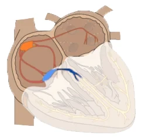
- Là một xung động xuất hiện trong nhịp tim
- Phía trên tâm thất (ở đâu đó trong nhĩ hoặc trong bộ nối nhĩ – thất — AV junction)
- Xung trên thất
- Đi tới tâm thất qua bộ nối nhĩ – thất
- Bộ nối nhĩ – thất là kết nối điện học duy nhất giữa nhĩ và thất
- Trừ khi có đường dẫn truyền phụ (accessory pathway) — hội chứng WPW
- Nếu bộ nối nhĩ – thất bị gián đoạn, xảy ra block nhĩ – thất độ III
Dẫn truyền thất và phức bộ QRS
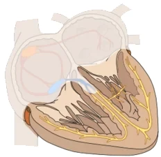
- Phức bộ QRS hẹp (<0,12s)
- Một xung trên thất đi tới tâm thất qua bộ nối nhĩ – thất
- Rồi đi qua hệ thống dẫn truyền (các nhánh bó — bundle branches)
- Rất nhanh khử cực hai thất trong vòng 0,12s
- Do đó, với hệ thống dẫn truyền còn nguyên vẹn
- Trên ECG sẽ thấy phức bộ QRS hẹp (<0,12s)
- Một xung trên thất đi tới tâm thất qua bộ nối nhĩ – thất
- Phức bộ QRS rộng (>0,12s)
- Khi hệ thống dẫn truyền thất bị tổn thương
- Hai thất được khử cực qua hệ thống dẫn truyền
- Và cũng qua cơ tim hoạt động (working myocardium)
- Qua cơ tim, xung động lan chậm
- Do đó, khử cực thất sẽ chậm hơn (>0,12s)
- Trên ECG sẽ thấy phức bộ QRS rộng (>0,12s)
- Khi hệ thống dẫn truyền thất bị tổn thương
Điện thế hoạt động và ECG
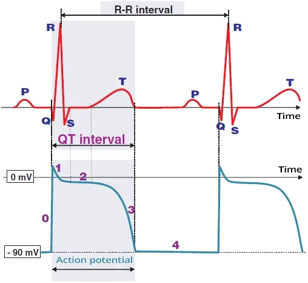
- Điện thế hoạt động (action potential) — xung động — là sự thay đổi nhanh chóng điện thế của các tế bào cơ tim
- Nó phát sinh do thay đổi nồng độ các ion trong và ngoài tế bào
- Điện thế hoạt động lan truyền
- Nhanh qua hệ thống dẫn truyền
- Chậm qua cơ tim hoạt động
ECG (chuyển đạo V6) và điện thế hoạt động
- Phức bộ QRS biểu thị khử cực thất
- Trong phức bộ QRS, sóng khử cực lan qua hai thất
- Đoạn ST là một đường đẳng điện
- Trong pha 2 của điện thế hoạt động, toàn bộ thành cơ tim đã khử cực (−), không sinh ra vector điện học
- Sóng T biểu thị tái cực thất
- Vector điện học trong lúc tái cực có cùng chiều với vector trong lúc khử cực
- Tuy nhiên, tái cực kéo dài hơn, nên sóng T rộng hơn phức bộ QRS
- Khoảng QT tương ứng với một chu chuyển điện học của tim:
- Khử cực và tái cực thất
- Sóng P biểu thị khử cực nhĩ
- Điện thế hoạt động của sóng P không được thể hiện trên hình
- Tái cực nhĩ bị ẩn trong phức bộ QRS
Điện thế hoạt động và thời kỳ trơ
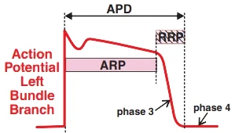
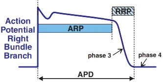
- ARP (thời kỳ trơ tuyệt đối)
- Trong ARP, các tế bào cơ tim không đáp ứng với một xung động khác
- RRP (thời kỳ trơ tương đối)
- Trong RRP, tế bào cơ tim chỉ đáp ứng với xung động trên ngưỡng
- Ví dụ, nếu nhánh phải đang trong ARP
- Và trong thời kỳ ARP có một xung trên thất đi tới nhánh bó này
- Từ một ngoại tâm thu nhĩ
- Xung động này sẽ bị block ở nhánh bó
- Xung động tiếp theo sẽ đi qua nhánh bó chỉ khi ở ngoài ARP
- Và trong thời kỳ ARP có một xung trên thất đi tới nhánh bó này
- Nhánh trái (LBB)
- Có ARP ngắn (thời kỳ trơ tuyệt đối)
- Nhánh phải (RBB)
- Có ARP dài (thời kỳ trơ tuyệt đối)
Dẫn truyền lệch hướng
- Là một rối loạn tạm thời của hệ thống dẫn truyền thất
- Là dẫn truyền bất thường của xung động (điện thế hoạt động) qua hệ thống dẫn truyền thất
- Đây là đáp ứng sinh lý của hệ thống dẫn truyền với tình trạng quá tải (về tần số)
- Các nguyên nhân gồm:
- Dẫn truyền chậm qua hệ thống dẫn truyền
- Block trong hệ thống dẫn truyền
- Trên ECG, biểu hiện bằng phức bộ QRS rộng (>0,12s)
- Các cơ chế dẫn truyền lệch hướng thường gặp nhất là:
- Block pha 3 (block phụ thuộc nhịp nhanh)
- Hiện tượng Ashman
- Block nhánh bó ngược dòng lệch hướng (aberrant retrograde bundle branch block)
- Block pha 4 (block phụ thuộc nhịp chậm)
- Block pha 3 (block phụ thuộc nhịp nhanh)
ECG và dẫn truyền lệch hướng
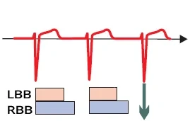
- Nhánh phải (RBB) có thời kỳ trơ tuyệt đối (ARP) dài hơn
- So với nhánh trái (LBB)
Dẫn truyền sinh lý
- Xung trên thất
- Đi qua các nhánh bó
- Ngoài ARP (trong RRP)
- Xung động không bị block
- Các phức bộ QRS hẹp và có hình dạng đồng nhất
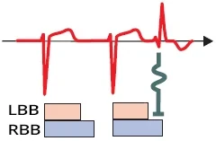
Dẫn truyền lệch hướng
- Ngoại tâm thu trên thất
- Xảy ra trong ARP (hoặc RRP) của nhánh phải
- Ngoại tâm thu chỉ bị block ở nhánh phải
- Phức bộ QRS rộng và có hình dạng của block nhánh phải (RBBB)
- Xung động chỉ được dẫn truyền bởi nhánh trái
- Phức bộ QRS rộng và có hình dạng của block nhánh phải (RBBB)
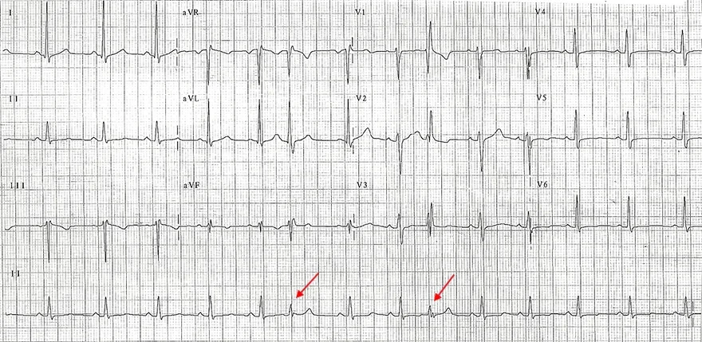
Dẫn truyền lệch hướng và nhịp xoang
- Nhịp xoang
- Tần số: 75/phút
- Chuyển đạo II liên tục (chuyển đạo dưới cùng)
- Phức bộ QRS thứ 6 và thứ 9 là do ngoại tâm thu nhĩ
- Ở các chuyển đạo khác, phức bộ QRS có hình thái block nhánh phải (RBBB)
- Phức bộ QRS thứ 6 và thứ 9 là do ngoại tâm thu nhĩ
- Ngoại tâm thu nhĩ
- Đi qua nhánh phải trong ARP (hoặc RRP)
- Do đó, chúng bị block ở nhánh phải, và hai thất được hoạt hoá chỉ qua nhánh trái
- Đây là một ví dụ của dẫn truyền lệch hướng (dẫn truyền bất thường của xung động qua hệ thống dẫn truyền thất)
2. BLOCK PHA 3 (BLOCK PHỤ THUỘC NHỊP NHANH)
Phase 3 aberracy, Phase 3 block, Tachycardia-dependent block, Rate-dependent bundle branch block
Pha 3 của điện thế hoạt động
- Điện thế hoạt động (action potential) — xung động — là sự thay đổi nhanh chóng điện thế của các tế bào cơ tim
- Xảy ra do sự thay đổi nồng độ các ion trong và ngoài tế bào
- Điện thế hoạt động lan truyền
- Nhanh qua hệ thống dẫn truyền
- Chậm qua cơ tim hoạt động (working myocardium)
Pha 3 của điện thế hoạt động
- Trên ECG, biểu hiện bằng sóng T (tái cực thất)
- Đây là thời kỳ trơ tương đối (RRP)
- Nếu một xung động đi tới một tế bào cơ tim (trong hệ thống dẫn truyền hoặc trong cơ tim) trong RRP
- Xung động này sẽ bị block
Điện thế hoạt động và thời kỳ trơ
- ARP (thời kỳ trơ tuyệt đối)
- Trong ARP, các tế bào cơ tim không đáp ứng với một xung động khác
- RRP (thời kỳ trơ tương đối)
- Trong RRP, tế bào cơ tim chỉ đáp ứng với xung động trên ngưỡng
- Ví dụ, nếu nhánh phải đang trong ARP
- Và một xung trên thất đi tới nhánh này trong ARP
- Từ một ngoại tâm thu nhĩ
- Xung động này sẽ bị block ở nhánh đó
- Xung động tiếp theo sẽ đi qua nhánh này chỉ khi ở ngoài ARP
- Và một xung trên thất đi tới nhánh này trong ARP
- Nhánh trái (LBB)
- Có ARP ngắn (thời kỳ trơ tuyệt đối)
- Nhánh phải (RBB)
- Có ARP dài (thời kỳ trơ tuyệt đối)
Block trong pha 3
- Block xảy ra khi một xung trên thất đi tới một phần nào đó của hệ thống dẫn truyền thất
- Trong pha 3 của điện thế hoạt động (thời kỳ trơ tương đối)
- Xung trên thất này bị block ở phần bị ảnh hưởng của hệ thống dẫn truyền
- Đây là nguyên nhân thường gặp nhất của dẫn truyền lệch hướng (aberrant conduction)
- Là một rối loạn tạm thời của hệ thống dẫn truyền thất
- Là dẫn truyền bất thường của xung động (điện thế hoạt động) qua hệ thống dẫn truyền thất
- Đây là đáp ứng sinh lý của hệ thống dẫn truyền với tình trạng quá tải
- Trên ECG, có thể biểu hiện dưới dạng
- Block nhánh phải (RBBB)
- Đây là kiểu block thường gặp nhất trong pha 3
- Vì nhánh phải có thời kỳ trơ dài hơn nhánh trái
- Block nhánh trái (LBBB)
- Block nhĩ – thất hoàn toàn
- Block phân nhánh (trước hoặc sau)
- Block nhánh phải (RBBB)
- Block pha 3 tạo ra block phụ thuộc nhịp nhanh trong các cơn nhịp nhanh trên thất
- Hiện tượng Ashman
- Hiện tượng Ashman là một block pha 3 xảy ra sau một khoảng RR kéo dài
- Thường gặp nhất trong rung nhĩ
ECG và block trong pha 3
- Nhánh phải (RBB) có thời kỳ trơ tuyệt đối (ARP) dài hơn
- So với nhánh trái (LBB)
Dẫn truyền sinh lý
- Xung trên thất
- Đi qua các nhánh bó
- Ngoài RRP
- Xung động không bị block
- Các phức bộ QRS hẹp và có cùng hình dạng
Dẫn truyền lệch hướng
- Ngoại tâm thu trên thất
- Xảy ra trong RRP của nhánh phải
- Ngoại tâm thu chỉ bị block ở nhánh phải
- QRS rộng và có hình dạng của block nhánh phải (RBBB)
- Xung động chỉ được dẫn truyền bởi nhánh trái
- QRS rộng và có hình dạng của block nhánh phải (RBBB)
Ngoại tâm thu nhĩ và block trong pha 3
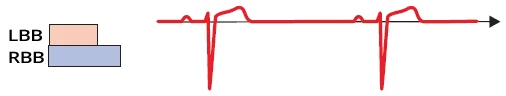
Nhịp xoang
- Nhịp xoang không có ngoại tâm thu nhĩ
- Mọi sóng P đều được dẫn truyền qua các nhánh bó
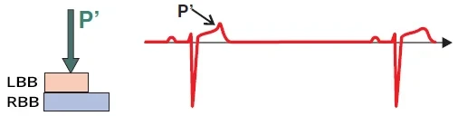
Ngoại tâm thu nhĩ (bị block)
- Dẫn truyền xuống thất trong sóng T (cả hai nhánh bó đều đang ở pha 3 – RRP)
- Bị block hoàn toàn ở các nhánh bó
- Nếu xuất hiện nhịp nhanh nhĩ và các sóng P xảy ra trong RRP của các nhánh bó
- Tất cả sóng P sẽ bị block, dẫn tới hình ảnh block nhĩ – thất độ III (block nhĩ – thất hoàn toàn) chức năng trên ECG
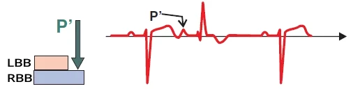
Ngoại tâm thu nhĩ (có hình ảnh RBBB)
- Ngoại tâm thu dẫn truyền xuống thất trong RRP (pha 3) của nhánh phải
- Bị block ở nhánh phải
- Trên ECG, quan sát thấy hình ảnh block nhánh phải (RBBB)
- Đây là một trường hợp dẫn truyền lệch hướng của ngoại tâm thu nhĩ
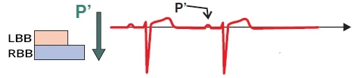
Ngoại tâm thu nhĩ (không bị block)
- Ngoại tâm thu dẫn truyền xuống thất ngoài RRP (pha 3) của các nhánh bó
- Nó không bị block
- Xuất hiện một phức bộ QRS đến sớm (có cùng hình dạng với QRS xoang)
Block phụ thuộc nhịp nhanh
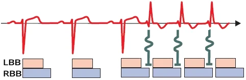
- Block trong pha 3 thường gặp nhất trong các cơn nhịp nhanh trên thất (SVT)
- Trong SVT, các xung động bắt đầu đi qua các nhánh bó trong RRP (ở pha 3)
- Đây là block chức năng của hệ thống dẫn truyền
- Block thường gặp nhất ở nhánh phải (do có thời kỳ trơ dài nhất)
- Block chỉ hiện diện trong lúc nhịp nhanh
- Khi nhịp nhanh hết, block chức năng biến mất
Block nhánh bó chức năng và nhịp nhanh trên thất
- Ban đầu là nhịp xoang
- Sau đó là một cơn nhịp nhanh trên thất kịch phát
- Các xung trên thất đi qua hệ thống dẫn truyền thất trong RRP của nhánh phải
- Do đó, khi có nhịp nhanh, xuất hiện block nhánh phải (RBBB) chức năng
- Đây là một trường hợp dẫn truyền lệch hướng
- Khi nhịp nhanh hết, block chức năng biến mất
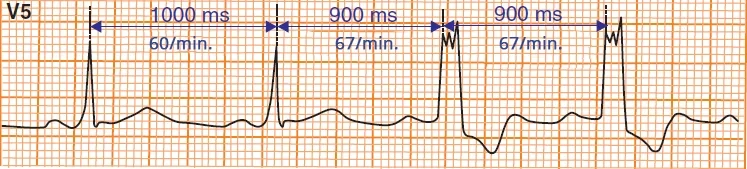
Block nhánh trái chức năng (block trong pha 3)
- Đây là nhịp xoang với tần số 60/phút
- Khi tần số tăng lên 67/phút
- Xuất hiện block nhánh trái (LBBB)
- Đây là block phụ thuộc nhịp nhanh (dù tần số 67/phút không được coi là nhịp nhanh)
- Nếu block nhánh bó chức năng xuất hiện ở tần số dưới 100/phút
- Điều đó chỉ ra tổn thương hệ thống dẫn truyền, ví dụ trong bệnh cơ tim
- Trong trường hợp này nhánh trái bị tổn thương nhiều hơn nhánh phải
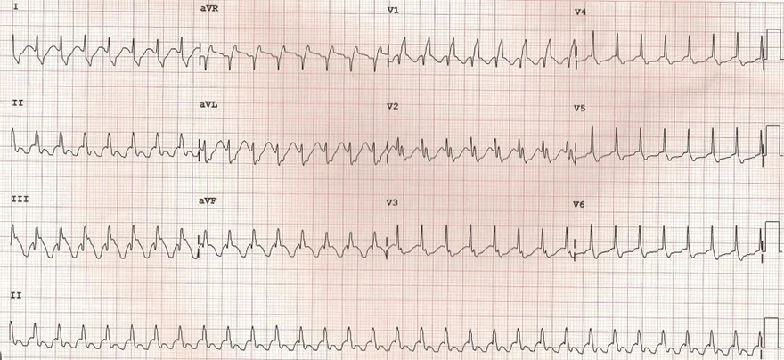
Block nhánh phải chức năng (block trong pha 3)
- Với nhịp xoang ở tần số 80/phút
- Bệnh nhân không có block nhánh bó
- Sau đó xuất hiện cơn hồi hộp trống ngực, và ECG ghi được cho thấy block nói trên
- Đây là SVT kịch phát với tần số 180/phút
- Không phải nhịp nhanh thất (V1 có dạng rsR' – tai thỏ phải lớn hơn)
- Khi tần số tăng lên 180/phút, xuất hiện block nhánh phải
- Vì các xung trên thất đi tới nhánh phải ở pha 3 của điện thế hoạt động
- Đây là block phụ thuộc nhịp nhanh
- Chỉ hiện diện trong lúc nhịp nhanh
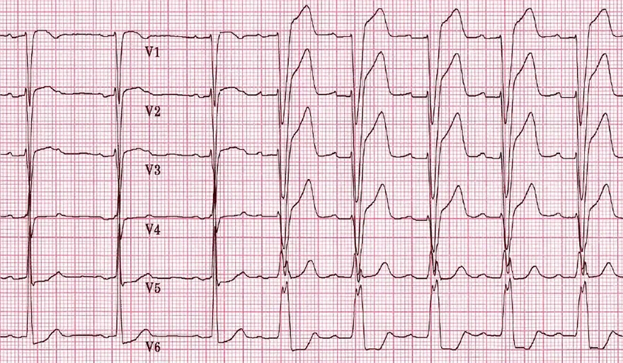
Block nhánh trái chức năng (block trong pha 3)
- 3 nhịp đầu tiên là nhịp xoang với tần số 60/phút
- Sau đó tần số tăng lên 75/phút
- Và xuất hiện block nhánh trái
- Đây là block phụ thuộc nhịp nhanh (dù tần số 75/phút không được coi là nhịp nhanh)
- Xảy ra cùng với sự tăng tần số
- Nhánh trái block các xung động ở pha 3
- Nếu block nhánh bó chức năng xuất hiện ở tần số dưới 100/phút
- Điều đó chỉ ra tổn thương hệ thống dẫn truyền, ví dụ trong bệnh cơ tim
- Trong trường hợp này, nhánh trái bị tổn thương nhiều hơn nhánh phải
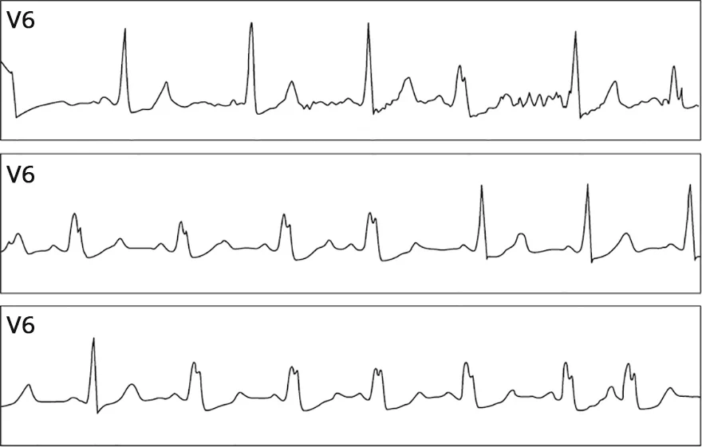
Block chức năng của nhánh trái (block pha 3)
- Đây là nhịp xoang với tần số 70/phút
- Khi tần số tăng trên 70/phút
- Bắt đầu xuất hiện block nhánh trái không liên tục
- Đây là block phụ thuộc nhịp nhanh (dù tần số trên 70/phút không được coi là nhịp nhanh)
- Nếu block nhánh bó chức năng xuất hiện ở tần số dưới 100/phút
- Điều này chỉ ra tổn thương hệ thống dẫn truyền, ví dụ trong bệnh cơ tim
- Trong trường hợp này nhánh trái bị tổn thương nhiều hơn nhánh phải
Dẫn truyền lệch hướng và nhịp xoang
- Nhịp xoang
- Tần số: 75/phút
- Chuyển đạo II liên tục (dưới cùng)
- Phức bộ QRS thứ 6 và thứ 9 xuất phát từ ngoại tâm thu nhĩ
- Ở các chuyển đạo khác, QRS có hình thái block nhánh phải (RBBB)
- Phức bộ QRS thứ 6 và thứ 9 xuất phát từ ngoại tâm thu nhĩ
- Ngoại tâm thu nhĩ
- Đi qua nhánh phải trong RRP (pha 3)
- Do đó, chúng bị block ở nhánh phải, và hai thất được hoạt hoá chỉ qua nhánh trái
- Đây là một ví dụ của dẫn truyền lệch hướng (dẫn truyền bất thường của xung động qua hệ thống dẫn truyền thất)
3. HIỆN TƯỢNG ASHMAN
Ashman phenomenon, Ashman beats, Gouaux-Ashman phenomenon, Phase 3 long-short cycle sequence aberrancy
Pha 3 của điện thế hoạt động
- Điện thế hoạt động (action potential — xung động) là sự thay đổi nhanh điện thế của tế bào cơ tim
- Nó phát sinh do thay đổi nồng độ các ion trong và ngoài tế bào
- Điện thế hoạt động lan truyền
- Nhanh qua hệ thống dẫn truyền
- Chậm qua cơ tim hoạt động (working myocardium)
Pha 3 của điện thế hoạt động
- Trên ECG, nó biểu hiện thành sóng T (tái cực thất)
- Đây là thời kỳ trơ tương đối (RRP)
- Nếu một xung động đến tế bào cơ tim (ở hệ thống dẫn truyền hoặc ở cơ tim) trong RRP
- Thì xung động này sẽ bị block
Điện thế hoạt động và thời kỳ trơ
- ARP (Absolute Refractory Period — thời kỳ trơ tuyệt đối)
- Trong ARP, tế bào cơ tim không đáp ứng với một xung động khác
- RRP (Relative Refractory Period — thời kỳ trơ tương đối)
- Trong RRP, tế bào cơ tim chỉ đáp ứng với xung động trên ngưỡng (suprathreshold)
- Ví dụ, nếu nhánh phải đang trong ARP
- Và một xung trên thất đến nhánh bó (bundle branch) trong ARP
- Từ một ngoại tâm thu nhĩ
- Thì xung động này sẽ bị block ở nhánh bó
- Xung động tiếp theo sẽ đi qua nhánh bó chỉ khi ở ngoài ARP
- Và một xung trên thất đến nhánh bó (bundle branch) trong ARP
- Nhánh trái
- Có ARP ngắn (thời kỳ trơ tuyệt đối)
- Nhánh phải
- Có ARP dài (thời kỳ trơ tuyệt đối)
ECG và block pha 3
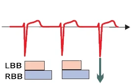
- Nhánh phải (RBB) có thời kỳ trơ tuyệt đối (ARP) dài hơn
- So với nhánh trái (LBB)
Dẫn truyền sinh lý
- Xung trên thất
- Đi qua các nhánh bó
- Ngoài RRP
- Xung động không bị block
- Các phức bộ QRS hẹp và có hình dạng đồng nhất
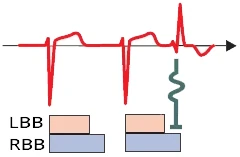
Dẫn truyền lệch hướng
- Ngoại tâm thu trên thất
- Xảy ra trong RRP của nhánh phải
- Ngoại tâm thu chỉ bị block ở nhánh phải
- Phức bộ QRS rộng và có hình dạng của block nhánh phải
- Xung động chỉ được dẫn truyền qua nhánh trái
- Phức bộ QRS rộng và có hình dạng của block nhánh phải
Hiện tượng Ashman
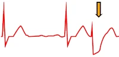
- Được mô tả đầu tiên bởi các bác sĩ người Mỹ Ashman và Gouaux vào năm 1947
- Họ nhận thấy rằng trong rung nhĩ
- Nếu một khoảng RR dài được theo sau bởi một khoảng RR ngắn
- Thì khoảng RR ngắn kết thúc bằng một phức bộ QRS rộng giống block nhánh phải (RBBB)
- Họ nhận thấy rằng trong rung nhĩ
- Đây là một dạng dẫn truyền lệch hướng (aberrant conduction) do block xung trên thất
- Ở pha 3 của điện thế hoạt động
- Nó xảy ra do sự kéo dài thời kỳ trơ của hệ thống dẫn truyền thất
- Trên ECG, nó biểu hiện thành khoảng RR dài – RR ngắn kết thúc bằng dẫn truyền lệch hướng
Thời kỳ trơ và khoảng RR
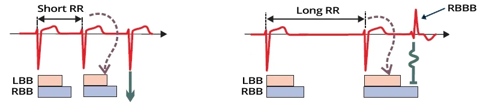
- Thời kỳ trơ kéo dài theo khoảng RR
- Đây là nguyên lý cơ bản của hiện tượng Ashman
Hiện tượng Ashman và rung nhĩ
- Bên trái là rung nhĩ
- Khoảng RR gần như hằng định
- Không có hiện tượng Ashman
- Xung trên thất không bị block trong hệ thống dẫn truyền thất
- Bên phải là rung nhĩ có hiện tượng Ashman
- Sau một khoảng RR kéo dài là một khoảng RR ngắn
- Khoảng RR kéo dài làm kéo dài thời kỳ trơ tiếp sau của hệ thống dẫn truyền
- Xung trên thất của khoảng RR ngắn
- Đến hệ thống dẫn truyền trong thời kỳ trơ và bị block
- Trên ECG, xuất hiện một phức bộ QRS có dạng block nhánh phải (RBBB)
- Vì nhánh phải có thời kỳ trơ dài hơn nhánh trái
- Sau một khoảng RR kéo dài là một khoảng RR ngắn
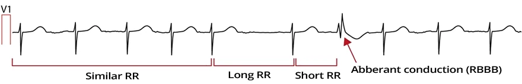
Hiện tượng Ashman và rung nhĩ
- Trên ECG có rung nhĩ ở chuyển đạo V1 với chuẩn hoá (calibration) 10mm
- Ban đầu, các khoảng RR tương đối hằng định
- Sau đó là một khoảng RR dài – ngắn
- RR dài làm kéo dài thời kỳ trơ
- RR ngắn kết thúc bằng dẫn truyền lệch hướng có dạng block nhánh phải (RBBB)
- Xung động của RR ngắn đi qua nhánh phải trong thời kỳ trơ và bị block
- Hiện tượng Ashman thường gặp nhất trong rung nhĩ
- Khi các khoảng RR thay đổi không đều
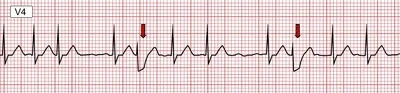
Hiện tượng Ashman và rung nhĩ
- Rung nhĩ
- Sau một khoảng RR dài là một khoảng RR ngắn
- Khoảng RR ngắn kết thúc bằng dẫn truyền lệch hướng có dạng block nhánh phải
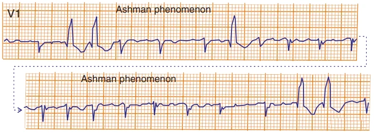
Hiện tượng Ashman và block nhánh bó ngược dòng lệch hướng
- Rung nhĩ
- Sau một khoảng RR dài là một khoảng RR ngắn
- Khoảng RR ngắn kết thúc bằng dẫn truyền lệch hướng có dạng block nhánh phải (rsR)
- Hiện tượng Ashman
- Đôi khi có thể khởi phát block nhánh bó ngược dòng lệch hướng (aberrant retrograde bundle branch block – ARTB)
- Xung động đảo chiều trong thất
- Và block ngược dòng xung động tiếp theo ở nhánh bó
- Đôi khi có thể khởi phát block nhánh bó ngược dòng lệch hướng (aberrant retrograde bundle branch block – ARTB)
Ngoại tâm thu thất và hiện tượng Ashman
- Ngoại tâm thu thất đôi khi bị nhầm với hiện tượng Ashman
- Vì cả hai tình trạng đều tạo ra phức bộ QRS rộng
Ngoại tâm thu thất | Hiện tượng Ashman | |
Độ rộng QRS | 0,15–0,2s | 0,12s–0,15s |
Hình dạng QRS | Kỳ dị | RBBB hoặc LBBB |
Khoảng ghép (coupling interval) | Như nhau | Thay đổi |
Khoảng nghỉ bù | Có | Không |
- Độ rộng QRS
- Ngoại tâm thu thất (VES) có QRS rộng hơn
- Vì các thất được hoạt hoá chậm từ một ổ ngoại vị qua cơ tim
- Trong hiện tượng Ashman, một phần các thất được hoạt hoá nhanh hơn qua hệ thống dẫn truyền
- Do đó, QRS hẹp hơn
- Ngoại tâm thu thất (VES) có QRS rộng hơn
- Hình dạng QRS
- VES có QRS kỳ dị
- Vì nó xuất phát từ một ổ ngoại vị ở đâu đó trong thất
- Trong hiện tượng Ashman, một phần các thất được hoạt hoá qua nhánh bó (thường gặp nhất là nhánh trái)
- Do đó, QRS có dạng block nhánh phải (RBBB) hoặc block nhánh trái (LBBB)
- VES có QRS kỳ dị
- Khoảng ghép (khoảng giữa ngoại tâm thu và phức bộ QRS đi trước)
- Ở VES, nó như nhau
- Vì mỗi VES đều từ cùng một ổ
- (hiếm khi, VES có thể xuất phát từ 2 ổ, dẫn đến 2 khoảng ghép khác nhau)
- Hiện tượng Ashman có khoảng ghép thay đổi
- Vì xung trên thất bị block một cách ngẫu nhiên trong thời kỳ trơ
- Ở VES, nó như nhau
- Khoảng nghỉ bù
- VES có khoảng nghỉ bù hoàn toàn
- Vì xung động từ VES block ngược dòng xung trên thất trong hệ thống dẫn truyền
- Tuy nhiên, khoảng nghỉ bù được đánh giá trong nhịp xoang đều, không phải trong rung nhĩ
- VES có khoảng nghỉ bù hoàn toàn
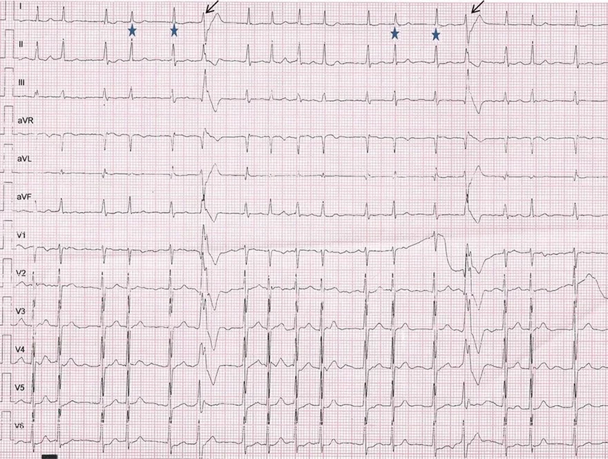
Hiện tượng Ashman và rung nhĩ
- Rung nhĩ trên ECG 12 chuyển đạo
- Sau một khoảng RR dài là một khoảng RR ngắn
- Khoảng RR ngắn được kết thúc bằng dẫn truyền lệch hướng có dạng block nhánh phải (RBBB)
- Dạng RBBB điển hình ở chuyển đạo V1 và V6
- Khoảng RR ngắn được kết thúc bằng dẫn truyền lệch hướng có dạng block nhánh phải (RBBB)
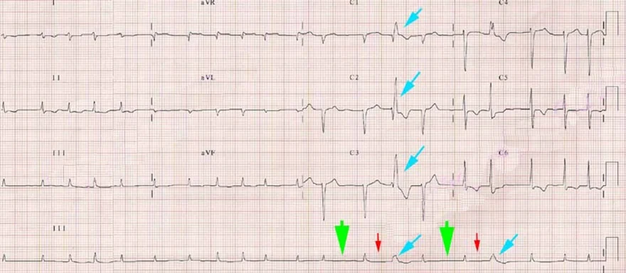
Hiện tượng Ashman và rung nhĩ
- Rung nhĩ trên ECG 12 chuyển đạo
- Sau một khoảng RR dài (mũi tên xanh lá) là một khoảng RR ngắn (mũi tên đỏ)
- Khoảng RR ngắn được kết thúc bằng dẫn truyền lệch hướng (mũi tên xanh dương)
- Có dạng block nhánh phải (RBBB)
- Dạng RBBB điển hình ở chuyển đạo V1 và V6
- Khoảng RR ngắn được kết thúc bằng dẫn truyền lệch hướng (mũi tên xanh dương)
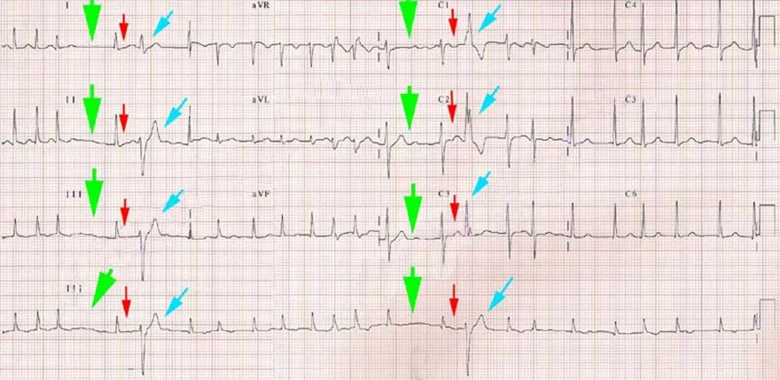
Hiện tượng Ashman và rung nhĩ
- Rung nhĩ trên ECG 12 chuyển đạo
- Sau một khoảng RR dài (mũi tên xanh lá) là một khoảng RR ngắn (mũi tên đỏ)
- Khoảng RR ngắn được kết thúc bằng dẫn truyền lệch hướng (mũi tên xanh dương)
- Có dạng block nhánh phải (RBBB)
- Dạng RBBB điển hình ở chuyển đạo V1 và V6
- Khoảng RR ngắn được kết thúc bằng dẫn truyền lệch hướng (mũi tên xanh dương)
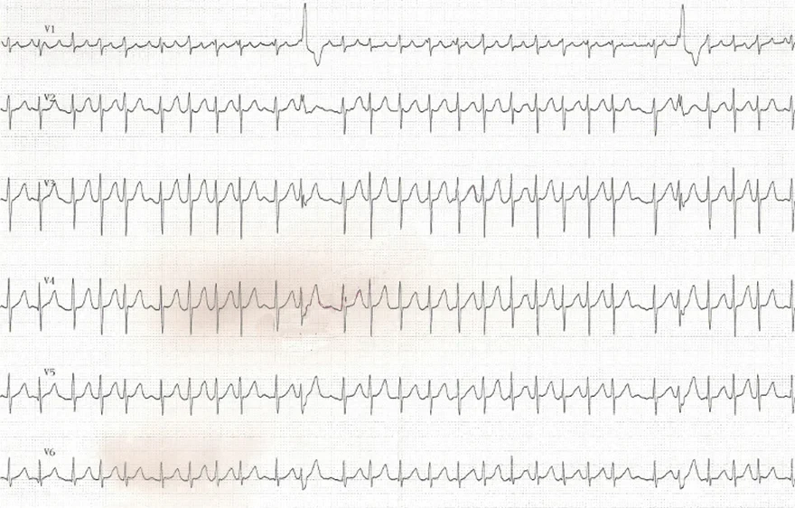
Hiện tượng Ashman và rung nhĩ
- Rung nhĩ trên ECG 12 chuyển đạo
- Sau một khoảng RR dài là một khoảng RR ngắn
- Khoảng RR ngắn được kết thúc bằng dẫn truyền lệch hướng có dạng block nhánh phải (RBBB)
- Dạng RBBB điển hình ở chuyển đạo V1 và V6
- Khoảng RR ngắn được kết thúc bằng dẫn truyền lệch hướng có dạng block nhánh phải (RBBB)
4. BLOCK NHÁNH BÓ NGƯỢC DÒNG LỆCH HƯỚNG
Retrograde invasion of bundle branch, Retrograde concealed conduction
Block ở pha 3
Block ở pha 3
- Xảy ra khi một xung trên thất đến một phần của hệ thống dẫn truyền thất
- Ở pha 3 của điện thế hoạt động (action potential) (RRP – Relative Refractory Period, thời kỳ trơ tương đối)
- Xung trên thất này bị block ở phần đó của hệ thống dẫn truyền
- Đây là nguyên nhân thường gặp nhất của dẫn truyền lệch hướng (aberrant conduction)
- Đây là một rối loạn tạm thời của hệ thống dẫn truyền thất
- Đây là một dẫn truyền bất thường (điện thế hoạt động) qua hệ thống dẫn truyền thất
- Đây là một đáp ứng sinh lý của hệ thống dẫn truyền với tình trạng quá tải
- Trên ECG, nó có thể biểu hiện thành
- Block nhánh phải
- Đây là biểu hiện thường gặp nhất của block ở pha 3
- Vì nhánh phải có thời kỳ trơ tuyệt đối (ARP) dài hơn nhánh trái
- Block nhánh trái
- Block nhĩ – thất hoàn toàn
- Block phân nhánh (trước hoặc sau)
- Block nhánh phải
ECG và block ở pha 3
- Nhánh phải (RBB) có thời kỳ trơ tuyệt đối (ARP) dài hơn
- So với nhánh trái (LBB)
Dẫn truyền sinh lý
- Xung trên thất
- Đi qua các nhánh bó
- Ngoài RRP
- Xung động không bị block
- Các phức bộ QRS hẹp và có hình dạng ổn định
Dẫn truyền lệch hướng
- Ngoại tâm thu trên thất
- Xảy ra trong RRP của nhánh phải
- Ngoại tâm thu chỉ bị block ở nhánh phải
- QRS rộng và có hình dạng của block nhánh phải
- Xung động chỉ được dẫn truyền qua nhánh trái
- QRS rộng và có hình dạng của block nhánh phải
Hiện tượng Ashman
- Hiện tượng Ashman là một block pha 3 xảy ra sau một khoảng RR kéo dài
- Nếu một xung trên thất đi qua nhánh bó trong thời kỳ trơ, nó sẽ bị block
- Thời kỳ trơ kéo dài theo khoảng RR
- Đây là nguyên lý cơ bản của hiện tượng Ashman
Hiện tượng Ashman và rung nhĩ
- Bên trái là rung nhĩ
- Khoảng RR gần như hằng định
- Không có hiện tượng Ashman
- Xung trên thất không bị block trong hệ thống dẫn truyền thất
- Bên phải là rung nhĩ có hiện tượng Ashman
- Sau một khoảng RR kéo dài là một khoảng RR ngắn
- Khoảng RR kéo dài làm kéo dài thời kỳ trơ tiếp sau của hệ thống dẫn truyền
- Xung trên thất của khoảng RR ngắn
- Đến hệ thống dẫn truyền trong thời kỳ trơ của nó và bị block
- Trên ECG, xuất hiện một phức bộ QRS có dạng block nhánh phải (RBBB)
- Vì nhánh phải có thời kỳ trơ dài hơn nhánh trái
- Sau một khoảng RR kéo dài là một khoảng RR ngắn
Block nhánh bó ngược dòng lệch hướng
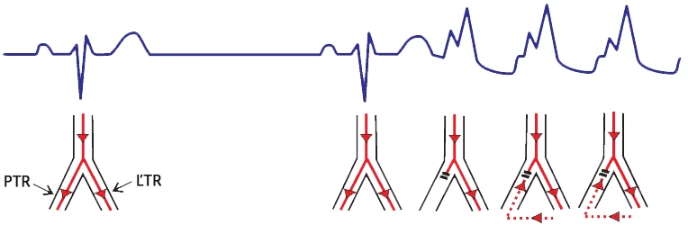
- Xảy ra trong nhịp nhanh trên thất (SVT)
- Bắt đầu bằng một block ở pha 3 của điện thế hoạt động, sau đó là một chu kỳ nhịp nhanh:
- Xung động từ phức bộ QRS lệch hướng đầu tiên đảo chiều trong thất
- Và block ngược dòng xung động tiếp theo ở nhánh bó
- Đôi khi xảy ra sau hiện tượng Ashman
- Nhịp nhanh trên thất kèm block nhánh bó lệch hướng kết thúc
- Tự phát, hoặc do một ngoại tâm thu
Cơ chế của block nhánh bó ngược dòng lệch hướng
- Phức bộ QRS rộng đầu tiên
- Xảy ra do dẫn truyền lệch hướng của một xung trên thất (ngoại tâm thu nhĩ)
- Xung động bị block ở pha 3 tại nhánh phải (RBB)
- Các thất chỉ được hoạt hoá qua nhánh trái (LBB)
- Phức bộ QRS rộng thứ hai và thứ ba
- Xung động từ phức bộ QRS trước đó đảo chiều trong thất
- Và block ngược dòng xung trên thất
- Nhịp nhanh có dạng QRS giống block nhánh phải
- Chu kỳ lặp lại
- Xung động từ phức bộ QRS trước đó đảo chiều trong thất
- Nhịp nhanh được kết thúc bởi một ngoại tâm thu khác, hoặc bởi sự chậm lại của tần số các xung trên thất
Block nhánh bó ngược dòng lệch hướng và hiện tượng Ashman
- Rung nhĩ
- Hiện tượng Ashman
- Sau một khoảng RR dài là một khoảng RR ngắn
- Khoảng RR ngắn kết thúc bằng dẫn truyền lệch hướng có dạng block nhánh phải (rsR)
- Đôi khi có thể khởi phát block nhánh bó ngược dòng lệch hướng (ARTB):
- Xung động từ phức bộ QRS lệch hướng đầu tiên đảo chiều trong thất
- Và block ngược dòng xung động tiếp theo ở nhánh bó
- Sau một khoảng RR dài là một khoảng RR ngắn
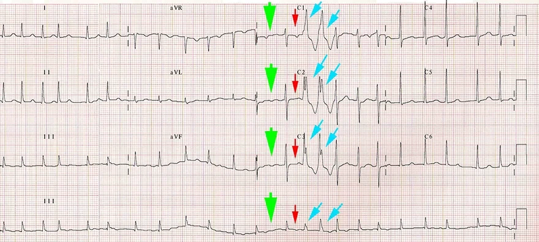
Block nhánh bó ngược dòng lệch hướng và hiện tượng Ashman
- Rung nhĩ
- Hiện tượng Ashman
- Sau một khoảng RR dài là một khoảng RR ngắn
- Khoảng RR ngắn kết thúc bằng dẫn truyền lệch hướng có dạng block nhánh phải
- Đôi khi có thể khởi phát block nhánh bó ngược dòng lệch hướng (ARTB):
- Xung động từ phức bộ QRS lệch hướng đầu tiên đảo chiều trong thất
- Và block ngược dòng xung động tiếp theo ở nhánh bó
- Sau một khoảng RR dài là một khoảng RR ngắn
5. BLOCK PHA 4 (BLOCK PHỤ THUỘC NHỊP CHẬM)
Phase 4 block, Bradycardia-dependent aberration
Điện thế hoạt động
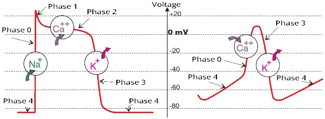
Cơ tim hoạt động (working myocardium)
Hệ thống dẫn truyền (conduction system)
- Điện thế hoạt động (action potential) là sự thay đổi nhanh điện thế của tế bào cơ tim
- Điện thế hoạt động lan truyền
- Nhanh qua hệ thống dẫn truyền
- Chậm qua cơ tim hoạt động
- Các xung động phát sinh tự phát ở nút xoang (SA node) và ở hệ thống dẫn truyền
- Vì pha 4 của điện thế hoạt động khử cực tự phát và chậm
- Khi đạt tới ngưỡng −50mV, quá trình khử cực khởi phát hoàn toàn (pha 0)
- Vì pha 4 của điện thế hoạt động khử cực tự phát và chậm
- Các tế bào cơ tim của cơ tim hoạt động và các sợi Purkinje
- Có pha 4 phẳng, chúng không khử cực tự phát
- Chúng chỉ bắt đầu khử cực khi được kích thích bởi một xung động từ bên ngoài (từ hệ thống dẫn truyền)
ECG và điện thế hoạt động
Pha 4 của điện thế hoạt động
- Đây là đường cong điện thế hoạt động của cơ tim hoạt động và của các sợi Purkinje ở thất
- Trên ECG, pha 4 hiện ra dưới dạng khoảng TQ (đoạn giữa sóng T và sóng Q)
Block ở pha 4 (block phụ thuộc nhịp chậm)
- Đây là một dẫn truyền lệch hướng (aberrant conduction) của một xung trên thất qua hệ thống dẫn truyền thất
- Đây là một rối loạn tạm thời của hệ thống dẫn truyền trong nhịp chậm (với khoảng RR kéo dài)
- Thường gặp nhất ở cơ tim bị tổn thương cấu trúc (ví dụ bệnh cơ tim, thiếu máu cục bộ)
- Khi có các sợi Purkinje bị tổn thương
- Trong hệ thống Purkinje bị tổn thương, các tế bào cơ tim bắt đầu khử cực tự phát trong pha 4
- Pha 4 càng dài (khoảng TQ) thì mức khử cực tự phát trong pha 4 càng lớn
- Cho tới khi đạt ngưỡng, do đó block một xung động từ bên ngoài (xung trên thất)
- Tình huống này hiếm và xảy ra khi có khoảng nghỉ RR đáng kể (tần số < 40/phút)
- Pha 4 càng dài (khoảng TQ) thì mức khử cực tự phát trong pha 4 càng lớn
- Block ở pha 4 thường biểu hiện nhất dưới dạng block nhánh trái (LBBB)
- Vì thất trái (các sợi Purkinje) nhạy cảm hơn với tổn thương do thiếu máu cục bộ
- Xảy ra trong hệ thống Purkinje bị tổn thương với khoảng RR kéo dài, chẳng hạn:
- Nhịp chậm
- Ngừng xoang
- Block nhĩ – thất độ II
- Hiện tượng này thường được gọi là block phụ thuộc nhịp chậm (bradycardia-dependent block)
Điện thế hoạt động và nhánh trái
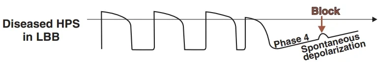
- Block ở pha 4 thường biểu hiện nhất dưới dạng block nhánh trái
- Vì thất trái (các sợi Purkinje) nhạy cảm hơn với tổn thương do thiếu máu cục bộ (so với thất phải)
Nhánh trái bị tổn thương (điện thế hoạt động)
- Block ở pha 4 — block phụ thuộc nhịp chậm
- Đây là điện thế hoạt động trong các sợi Purkinje bị tổn thương của nhánh trái
- Nhánh trái dẫn truyền các xung trên thất một cách lặp lại
- Tiếp theo là một khoảng ngừng xoang, trong đó các sợi Purkinje bắt đầu khử cực tự phát ở pha 4
- Xung trên thất bị block ở pha 4 của điện thế hoạt động của nhánh trái
- Trên ECG sẽ có một khoảng nghỉ RR và một phức bộ QRS mang hình ảnh của block nhánh trái
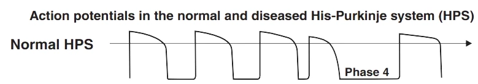
Nhánh trái không bị tổn thương (điện thế hoạt động)
- Đây là điện thế hoạt động trong các sợi Purkinje không bị tổn thương của nhánh trái
- Trong khoảng ngừng xoang, không có khử cực tự phát ở pha 4
- Xung trên thất được dẫn truyền qua nhánh trái
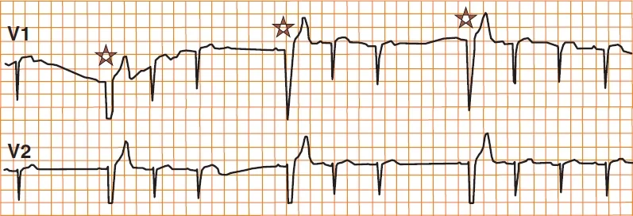
Block ở pha 4 (block phụ thuộc nhịp chậm)
- Sau một khoảng ngừng xoang, tiếp theo là một QRS xoang mang hình ảnh của LBBB (dấu hoa thị)
- Xung xoang được dẫn truyền tới thất chỉ qua nhánh phải
- Ở nhánh trái, nó bị block ở pha 4 của điện thế hoạt động
- Block pha 4 chỉ xảy ra trong hệ thống Purkinje bị tổn thương (thiếu máu cục bộ, bệnh cơ tim)
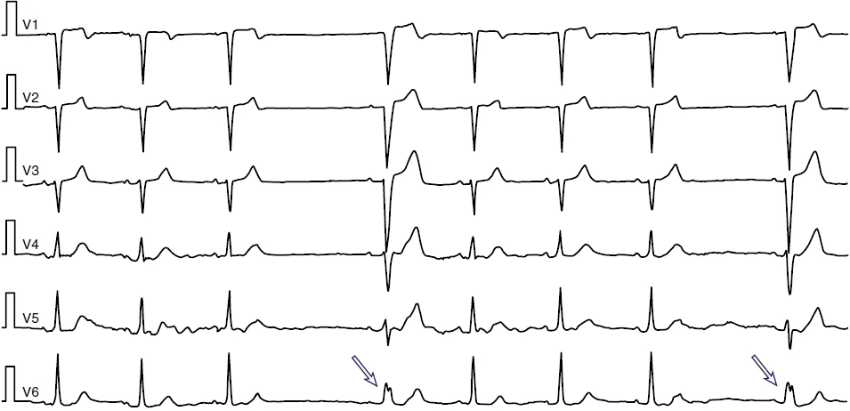
Block ở pha 4 (block phụ thuộc nhịp chậm)
- Sau một khoảng ngừng xoang, tiếp theo là một QRS xoang mang hình ảnh của LBBB (các mũi tên)
- Xung xoang được dẫn truyền tới thất chỉ qua nhánh phải
- Ở nhánh trái, nó bị block ở pha 4 của điện thế hoạt động
- Block pha 4 chỉ xảy ra trong hệ thống Purkinje bị tổn thương (thiếu máu cục bộ, bệnh cơ tim)
6. DẪN TRUYỀN ẨN
Concealed conduction, Concealed extrasystoles, Pseudo AV block, Reciprocal Echo beat
Hệ thống dẫn truyền và dẫn truyền ẩn
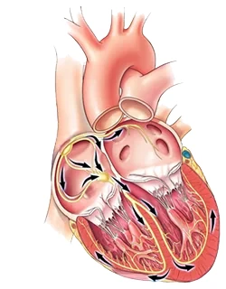
- Xung động (điện thế hoạt động — action potential) lan truyền qua
- Hệ thống dẫn truyền và cơ tim hoạt động (working myocardium)
- Trong quá trình lan truyền, nó tạo ra một vector điện học
- Vector điện học ở các phần khác nhau của tim
- Được thấy trên giấy ECG dưới dạng đường cong ECG
- Dẫn truyền ẩn (concealed conduction)
- Là sự dẫn truyền xung động qua một phần nhất định của hệ thống dẫn truyền
- Mà không thấy được trên đường cong ECG (bị ẩn)
- Được chẩn đoán dựa vào đường cong ECG tiếp sau
- Dẫn truyền ẩn thường biểu hiện nhất ở bộ nối nhĩ – thất (AV junction)
- Là sự dẫn truyền xung động qua một phần nhất định của hệ thống dẫn truyền
Cơ chế của dẫn truyền ẩn
- Dẫn truyền ẩn thường biểu hiện nhất ở bộ nối nhĩ – thất
- Nếu một xung động xâm nhập vào bộ nối nhĩ – thất ở một thời điểm nhất định (thường gặp nhất là theo hướng ngược dòng từ một ngoại tâm thu thất)
- Thì bộ nối nhĩ – thất dẫn truyền xung động kế tiếp chậm hơn
- Nguyên lý là sự thay đổi điện sinh lý thời kỳ trơ theo thời điểm
Ngoại tâm thu thất và dẫn truyền ẩn
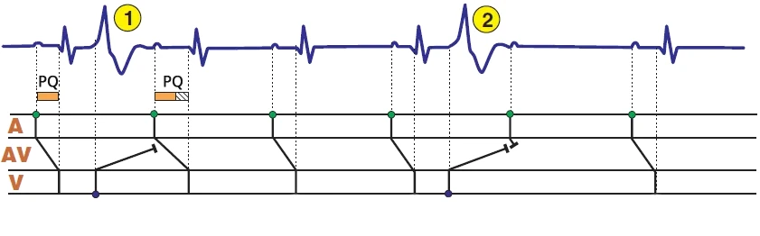
Dẫn truyền ẩn và ngoại tâm thu thất
- Biểu đồ bậc thang (laddergram) minh hoạ sự lan truyền xung động qua hệ thống dẫn truyền
- A — nhĩ, AV — bộ nối nhĩ – thất, V — thất
- (1) Một ngoại tâm thu thất xen kẽ (interpolated) (VES) — xảy ra giữa 2 nhịp xoang
- Xung động từ VES xâm nhập ngược dòng vào bộ nối nhĩ – thất và làm thay đổi các đặc tính điện sinh lý của bộ nối
- Xung xoang tiếp sau đến bộ nối nhĩ – thất trong thời kỳ trơ một phần
- Xung động dẫn truyền chậm hơn qua bộ nối nhĩ – thất
- Điều này thấy được trên ECG dưới dạng khoảng PQ kéo dài
- Dẫn truyền ẩn là sự dẫn truyền ngược dòng của VES vào bộ nối nhĩ – thất, điều không thấy được trên ECG
- Chỉ thấy được khoảng PQ kéo dài tiếp sau đó
- (2) Ngoại tâm thu thất
- Xâm nhập ngược dòng vào bộ nối nhĩ – thất
- Xung xoang tiếp sau đến bộ nối nhĩ – thất trong thời kỳ trơ và bị block
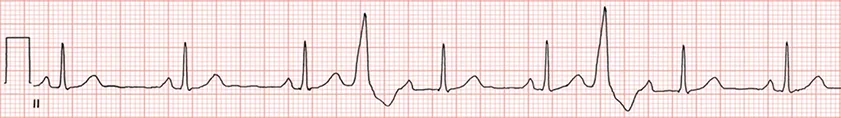
Dẫn truyền ẩn và ngoại tâm thu thất
- Nhịp xoang với khoảng PQ 0,18s
- Hai ngoại tâm thu thất (VES) xen kẽ
- Mỗi ngoại tâm thu được tiếp theo bởi một khoảng PQ kéo dài 0,32s
- Đây không phải block nhĩ – thất độ I từng lúc
- Mỗi ngoại tâm thu được tiếp theo bởi một khoảng PQ kéo dài 0,32s
- Xung động ngược dòng từ VES xâm nhập vào bộ nối nhĩ – thất
- Và làm chậm sự dẫn truyền tiếp sau của xung xoang
- Điều này thấy được dưới dạng khoảng PQ kéo dài 0,32s (sau VES)
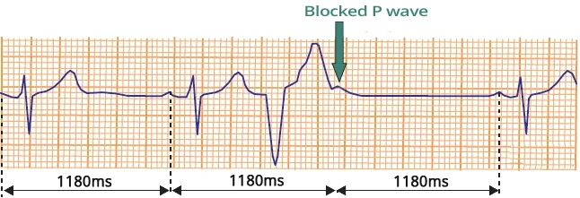
Ngoại tâm thu thất (VES)
- Xung động ngược dòng từ VES đã xâm nhập vào bộ nối nhĩ – thất
- Sóng P sau VES bị block
- Ở bộ nối nhĩ – thất, xung xoang và xung ngược dòng từ VES gặp nhau trong pha trơ và block lẫn nhau
- Sau VES là một khoảng nghỉ bù hoàn toàn
- 2× khoảng RR không có VES = khoảng RR có VES
- Không có dẫn truyền ẩn
Rung nhĩ và dẫn truyền ẩn
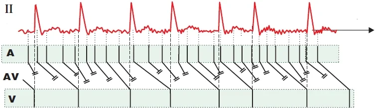
- Trong rung nhĩ, các xung động ở nhĩ xuất hiện không đều với tần số 350–600/phút
- Các xung động này được lọc ở bộ nối nhĩ – thất, dẫn tới tần số thất hoàn toàn không đều (irregularly irregular)
- Bộ nối nhĩ – thất hoạt động như một bộ lọc, ví dụ chỉ cho mỗi xung động thứ tư đi xuống thất
- Sau khi một xung động đi qua bộ nối nhĩ – thất, xuất hiện một thời kỳ trơ
- Thời kỳ trơ này tạm thời block các xung động tiếp sau
- Nếu một xung động đến bộ nối nhĩ – thất ở một thời điểm nhất định
- Sẽ xuất hiện dẫn truyền ẩn (thời kỳ trơ một phần) và xung động kế tiếp được dẫn truyền chậm hơn
- Dẫn truyền ẩn trong rung nhĩ không thấy được trên ECG vì không thể phân định được khoảng PQ
Dẫn truyền ẩn và rung nhĩ
- Các xung trên thất trong rung nhĩ
- Được lọc (bị block) ở bộ nối nhĩ – thất thông qua thời kỳ trơ
- Một số xung động tạo ra dẫn truyền ẩn (xung động kế tiếp được dẫn truyền chậm hơn)
- Điều này có thể thấy trên biểu đồ bậc thang, ở phần AV, dưới dạng góc dẫn truyền nhĩ – thất khác nhau
- Không thấy được trên ECG vì trong rung nhĩ không thể phân định khoảng PQ
Block nhĩ – thất giả và dẫn truyền ẩn
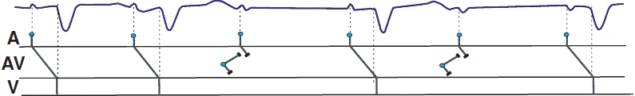
- Dẫn truyền ẩn đôi khi có thể giả dạng block nhĩ – thất trên ECG
- Tuy nhiên, đây là block nhĩ – thất giả (pseudo AV block) với cơ chế điện sinh lý khác
Dẫn truyền ẩn và block nhĩ – thất độ II giả (Mobitz II)
- ECG cho thấy block nhĩ – thất độ II (Mobitz II)
- Mỗi sóng P thứ 2 đều bị block
- Đây là dẫn truyền ẩn giả dạng block nhĩ – thất trên ECG
- Ngoại tâm thu bộ nối và xung xoang gặp nhau ở bộ nối nhĩ – thất trong nhịp xoang
- Tuy nhiên, các xung động gặp nhau trong pha trơ và block lẫn nhau
- Xung xoang và xung bộ nối không được dẫn truyền xuống thất
- Trên bản ghi ECG dài, hình ảnh ECG của block nhĩ – thất độ II sẽ không tiếp diễn
- Vì ngoại tâm thu bộ nối sẽ phải xuất hiện đúng vào thời điểm
- Khi bộ nối nhĩ – thất đang ở pha trơ do xung động từ nút xoang
- Điều này là không thể trên một bản ghi ECG dài
- Vì ngoại tâm thu bộ nối sẽ phải xuất hiện đúng vào thời điểm
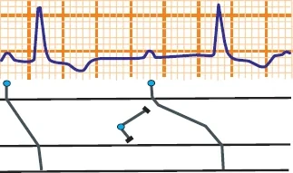
Dẫn truyền ẩn và block nhĩ – thất độ I giả
- ECG cho thấy block nhĩ – thất độ I
- Đặc trưng bởi khoảng PQ kéo dài > 0,2s
- Đây là dẫn truyền ẩn giả dạng block nhĩ – thất trên ECG
- Ngoại tâm thu bộ nối và xung xoang gặp nhau ở bộ nối nhĩ – thất trong nhịp xoang
- Ngoại tâm thu bộ nối xâm nhập một phần vào bộ nối nhĩ – thất, làm cho xung động từ nút xoang được dẫn truyền chậm hơn qua bộ nối nhĩ – thất
- Điều này tạo ra một thời kỳ trơ một phần ở bộ nối nhĩ – thất, làm thay đổi tốc độ dẫn truyền của các xung động tiếp sau
- Khoảng PQ kéo dài
- Trên bản ghi ECG dài, hình ảnh ECG của block nhĩ – thất độ I sẽ không tồn tại dai dẳng
- Do thời điểm xuất hiện lặp lại khó xảy ra của ngoại tâm thu bộ nối
Nhịp dội (echo beat) và dẫn truyền ẩn
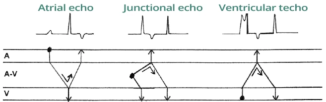
- Bộ nối nhĩ – thất có 2 đường dẫn truyền (đường chậm và đường nhanh)
- Nếu một xung động bắt đầu quay vòng quanh các đường dẫn truyền này (vào lại — re-entry), sẽ dẫn tới nhịp nhanh vào lại nút nhĩ – thất (AVNRT)
- Nhịp dội (echo beat)
- Xảy ra khi ngoại tâm thu có thời điểm xuất hiện đặc biệt, lúc xung động "dội lại" từ bộ nối nhĩ – thất
- Xung động quay vòng quanh bộ nối nhĩ – thất (qua 2 đường dẫn truyền) sao cho nó không gặp thời kỳ trơ của chính nó
- Một xung động do đó hoạt hoá cả nhĩ và thất từ bộ nối nhĩ – thất
Dẫn truyền ẩn và các nhịp dội
- Đây là dẫn truyền ẩn, trong đó một xung động tạo ra nhiều sóng trên ECG (các sóng P, các phức bộ QRS)
- Nhịp dội nhĩ
- Xung động từ một ngoại tâm thu nhĩ
- Quay vòng quanh bộ nối nhĩ – thất
- Một xung động hoạt hoá nhĩ hai lần và thất một lần
- Nhịp dội bộ nối
- Xung động từ một ngoại tâm thu bộ nối
- Quay vòng quanh bộ nối nhĩ – thất
- Một xung động hoạt hoá nhĩ một lần và thất hai lần
- Nhịp dội thất
- Xung động từ một ngoại tâm thu thất
- Quay vòng quanh bộ nối nhĩ – thất
- Một xung động hoạt hoá nhĩ một lần và thất hai lần
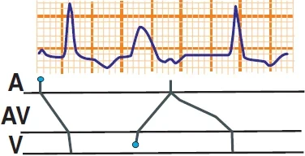
Dẫn truyền ẩn và block nhĩ – thất độ I giả
- Trên ECG có một nhịp dội thất
- Giả dạng block nhĩ – thất độ I
- Khoảng PQ kéo dài > 0,2s
- Giả dạng block nhĩ – thất độ I
- Tuy nhiên, với bản ghi ECG dài, hình ảnh ECG của block nhĩ – thất độ I sẽ không tồn tại dai dẳng
- Do thời điểm xuất hiện lặp lại khó xảy ra của ngoại tâm thu thất
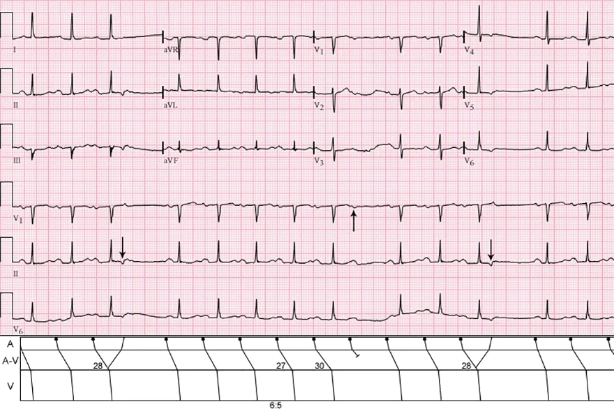
Nhịp dội nhĩ và block nhĩ – thất độ II (Wenckebach)
- Trên ECG có block nhĩ – thất độ II (Mobitz I – Wenckebach) với dẫn truyền xuống thất thay đổi
- Khoảng PQ dài dần cho tới khi sóng P bị block
- Ở giữa bản ghi ECG, tỉ lệ dẫn truyền xuống thất là 6:5 (sóng P thứ 6 bị block)
- Chú ý trên biểu đồ bậc thang, thời gian chậm dẫn truyền của xung động ở nút nhĩ – thất là 27ms, 28ms, 30ms
- Để xung động quay vòng lại trong bộ nối nhĩ – thất, nó không được gặp thời kỳ trơ (phải đúng thời điểm)
- Nhịp dội nhĩ chỉ xảy ra khi
- Dẫn truyền trong nút nhĩ – thất kéo dài tới 28ms
- Khi đó xung động quay vòng lại trong bộ nối nhĩ – thất và không gặp thời kỳ trơ
- Dẫn truyền trong nút nhĩ – thất kéo dài tới 28ms
7. NHỊP HOÀ NHẬP
Ventricular fusion beat
Cơ chế nhịp hoà nhập (fusion beat)
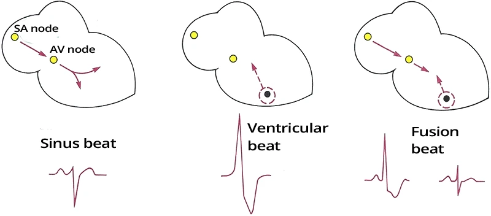
Cơ chế nhịp hoà nhập
- Nhịp xoang
- Hai thất được hoạt hoá bởi một xung từ nút xoang (SA node) qua hệ thống dẫn truyền của thất
- Xung lan nhanh qua hệ thống dẫn truyền và khử cực hai thất trong vòng 0,12s
- Do đó, trên ECG, phức bộ QRS hẹp < 0,12s
- Nhịp thất
- Xung khởi phát trong thất và khử cực hai thất qua cơ tim (không qua hệ thống dẫn truyền)
- Qua cơ tim, xung lan chậm, với khử cực kéo dài hơn 0,12s
- Do đó, sẽ có phức bộ QRS rộng > 0,12s
- Nhịp thất xuất hiện trong:
- Ngoại tâm thu thất (VES)
- Nhịp nhanh thất
- Xung khởi phát trong thất và khử cực hai thất qua cơ tim (không qua hệ thống dẫn truyền)
- Nhịp hoà nhập
- Hai thất được khử cực bởi 2 xung
- Một xung từ nhĩ, xung kia từ thất
- Kết quả là một phức bộ QRS biến dạng
- Rộng hơn nhịp xoang và hẹp hơn nhịp thất
- Hai thất được khử cực bởi 2 xung
Nhịp hoà nhập
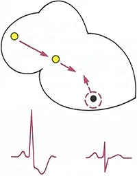
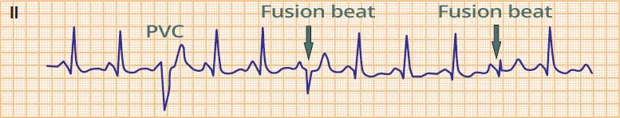
- Xảy ra ở hai thất do sự hoà nhập của một xung trên thất và một xung thất
- Hiếm khi có thể xảy ra ở hai nhĩ (tạo ra sóng P biến dạng)
- Phức bộ QRS của nhịp hoà nhập
- Rộng hơn nhịp xoang và hẹp hơn phức bộ thất
- Hình dạng phụ thuộc vào vị trí nơi hai xung gặp nhau
- Và vào vector thất tạo thành
- Hình cho thấy 2 nhịp hoà nhập khác nhau
Các nhịp hoà nhập
- Nhịp xoang
- Ngoại tâm thu thất (VES)
- Hai thất được khử cực chỉ bởi xung thất
- Xung xoang bị block tại bộ nối nhĩ – thất (AV junction)
- Vì nó gặp thời kỳ trơ (hai thất đã khử cực hoàn toàn do ngoại tâm thu thất)
- Nhịp hoà nhập
- Hai thất đã bắt đầu khử cực từ ngoại tâm thu thất
- Xung xoang cũng đến được hai thất, vì hai thất chưa khử cực hoàn toàn
- Do đó, hai thất được khử cực bởi hai xung
- Các nhịp hoà nhập có hình dạng khác nhau
- Vì các xung gặp nhau ở những vị trí khác nhau trong thất (tạo ra vector khác nhau)
Nguyên nhân của các nhịp hoà nhập
- Các nhịp hoà nhập thất xảy ra bất cứ khi nào hai xung gặp nhau trong thất:
- Nhịp nhanh thất
- Nhịp thất gia tốc
- Song tâm thu thất (parasystole)
- Ngoại tâm thu thất
- Tạo nhịp thất
- Hội chứng WPW
- Phân ly nhĩ – thất (AV dissociation)
- Nếu có một nhịp hoà nhập thất trong phân ly nhĩ – thất,
- Thì nguyên nhân của phân ly nhĩ – thất không phải là block nhĩ – thất độ III (block nhĩ – thất hoàn toàn)
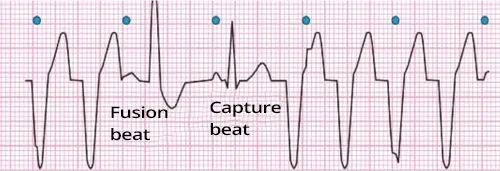
Nhịp nhanh thất
- Nhịp nhanh thất
- Các phức bộ QRS rộng với tần số 125/phút
- Phân ly nhĩ – thất (là dấu hiệu đặc trưng của nhịp nhanh thất)
- Các phức bộ QRS rộng và các sóng P (các điểm màu xanh) độc lập với nhau
- Nhịp hoà nhập (là dấu hiệu đặc trưng của nhịp nhanh thất)
- Một xung xoang (sóng P) xuất hiện vào thời điểm nó có thể được dẫn xuống thất (ngoài thời kỳ trơ)
- Hai thất được hoạt hoá bởi hai xung:
- Một xung từ nút xoang
- Một xung khác từ một ổ ngoại vị thất
- Nhịp bắt được (capture beat)
- Một xung xoang (sóng P) xuất hiện vào thời điểm nó được dẫn xuống thất và tái lập (reset) ổ ngoại vị thất
- Do đó hai thất chỉ được hoạt hoá bởi xung từ nút xoang
- Đây là một nhịp xoang
- Sau đó nhịp nhanh thất tiếp tục
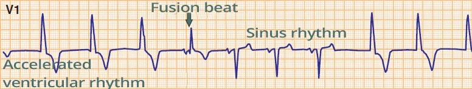
Nhịp thất gia tốc
- Nhịp thất gia tốc với tần số 60/phút.
- Một ổ ngoại vị thất đã vượt nhịp xoang
- Nhịp hoà nhập
- Xung xoang xuất hiện ngay trước phức bộ QRS thất
- Hai thất được khử cực bởi cả xung thất và xung xoang
- Sau đó là 3 nhịp của nhịp xoang
- Nhịp hoà nhập khác với các phức bộ QRS xoang
- Sau nhịp xoang, nhịp thất gia tốc trở lại
- Tim luôn đập theo ổ có tần số cao nhất (ức chế vượt tần số — overdrive suppression)
- Xung xoang xuất hiện ngay trước phức bộ QRS thất
Song tâm thu thất
- Song tâm thu thất xảy ra khi tim có 2 nhịp độc lập (nhịp thất và nhịp xoang)
- Nhịp xoang
- Tần số 90/phút
- Nhịp xoang bị gián đoạn bởi các nhịp thất
- Khoảng dẫn truyền thay đổi
- Nhịp hoà nhập
- Được tạo ra do sự hoà nhập của xung xoang và xung thất
- Khoảng giữa hai ổ ngoại vị (inter-ectopic interval) luôn là một bội số của 1200ms
- Nhịp thất có tần số 50/phút (1200ms)
- Hai thất được hoạt hoá mỗi xung ngoại vị thứ ba (3×1200ms) hoặc mỗi xung thứ năm (5×1200ms)
- Vì xung thất chỉ khử cực hai thất nếu chúng chưa bị khử cực bởi xung xoang
Nhịp hoà nhập và máy tạo nhịp
- Máy tạo nhịp một buồng ở chế độ VVI
- 4 phức bộ QRS đầu tiên là các nhịp giả hoà nhập (pseudo-fusion beat)
- Các phức bộ QRS nội tại bị che bởi gai tạo nhịp (pacing artifact)
- Gai xuất hiện ngay sau hoạt hoá thất nội tại, nên nó không ảnh hưởng đến hình dạng QRS
- Phức bộ QRS nội tại khi không có gai tạo nhịp thì không được ghi lại trên ECG
- 3 phức bộ QRS cuối là các phức bộ QRS được tạo nhịp
- Một phức bộ QRS đi sau gai tạo nhịp
- Nhịp hoà nhập – F
- Chúng thường hẹp hơn các phức bộ QRS được tạo nhịp bình thường
- Vì hai thất khử cực nhanh hơn khi xuất phát từ hai ổ
- Chúng có hình dạng thay đổi
- Chúng luôn khác biệt với
- Các phức bộ QRS được tạo nhịp bình thường
- Các phức bộ QRS nội tại không được tạo nhịp
- Chúng luôn khác biệt với
- Chúng thường hẹp hơn các phức bộ QRS được tạo nhịp bình thường
Nhịp hoà nhập và hội chứng WPW

- Trong hội chứng WPW, có một đường dẫn truyền phụ (accessory pathway — bó Kent)
- Bó Kent hoạt hoá một thất sớm hơn so với xung từ bộ nối nhĩ – thất
- Xung từ bó Kent tạo ra sóng delta trên ECG
- Sóng delta
- Làm rộng phức bộ QRS
- Làm ngắn khoảng PQ
- Nhịp hoà nhập
- Xung thứ 1 hoạt hoá hai thất qua bộ nối nhĩ – thất (phức bộ QRS)
- Xung thứ 2 hoạt hoá hai thất qua bó Kent (sóng delta)
Hội chứng WPW (type A)
- Nhịp hoà nhập
- Sóng delta và QRS rộng khoảng 0,15s
- Khoảng PQ ngắn < 0,12s
- QRS và sóng delta trội (V1)
- Cho thấy bó Kent nằm ở nhĩ trái
- Sóng R trội ở V1–V3
- Đây không phải là dày thất phải
(right ventricular hypertrophy) - Đây là một dấu hiệu của hội chứng WPW
- Đây không phải là dày thất phải
8. ỨC CHẾ VƯỢT TẦN SỐ
Overdrive suppression phenomenon, Subsidiary pacemakers
Chủ nhịp
- Tim đập theo vị trí có tần số cao nhất
- Ở tim khoẻ mạnh, đó là nút xoang (SA node)
- Chủ nhịp (pacemaker) nghĩa là "bộ định nhịp"
- Ở tim khoẻ mạnh, chủ nhịp là nút xoang
- Chủ nhịp cũng được dùng để chỉ máy kích thích tim (cardiac stimulator)
- Là máy phát ra xung thay cho nút xoang
- Điện thế chủ nhịp (khả năng tự phát xung)
- Giảm dần trong hệ thống dẫn truyền từ nút xoang xuống hai thất
- Hoạt tính chủ nhịp thấp nhất là ở cơ tim hoạt động (working myocardium)
Các chủ nhịp thay thế
- Các chủ nhịp thay thế (subsidiary pacemaker)
- Biểu thị một sự sắp xếp theo thứ bậc của các phần khác nhau của tim
- Dựa trên khả năng tự phát xung (điện thế chủ nhịp) của chúng
- Biểu thị một sự sắp xếp theo thứ bậc của các phần khác nhau của tim
- Tim đập theo vị trí có tần số cao nhất
- Nếu một chủ nhịp ở cấp cao hơn bị tổn thương
- Một chủ nhịp thay thế ở cấp thấp hơn sẽ được hoạt hoá
Nút xoang | 60–100/phút |
Đường liên nút | 55–60/phút |
Nút nhĩ – thất | 45–50/phút |
Bó His | 40–45/phút |
Các nhánh Tawara | 40–45/phút |
Sợi Purkinje | 35–40/phút |
Cơ tim | 30–35/phút |
- Tần số khử cực tự phát ở các phần khác nhau của hệ thống dẫn truyền
3 chủ nhịp của tim
- Tim có 3 chủ nhịp chính (nút xoang, nút nhĩ – thất, các sợi Purkinje ở thất)
- Chúng được hoạt hoá và bảo đảm nhịp tim
- Các vị trí khác hiếm khi hoạt động như chủ nhịp
3 chủ nhịp chính
- Chủ nhịp cấp 1 (nút xoang)
- Nhịp xoang (f: 50–100/phút)
- Chủ nhịp cấp 2 (nút nhĩ – thất)
- Nhịp bộ nối (f: 40–50/phút)
- Chủ nhịp cấp 3 (các sợi Purkinje ở thất)
- Nhịp thất (f: 20–40/phút)
- Nếu chủ nhịp cấp 1 bị tổn thương
- Chủ nhịp cấp 2 được hoạt hoá
- Nếu chủ nhịp cấp 2 (và cấp 1) bị tổn thương
- Chủ nhịp cấp 3 được hoạt hoá
Ức chế vượt tần số
- Ức chế vượt tần số (overdrive suppression) nghĩa là vị trí có tần số cao nhất
- Làm mất hoạt động của các vị trí có tần số thấp hơn (làm mất tính tự động của các vị trí đó)
- Hệ thống dẫn truyền khi đó dẫn các xung từ vị trí có tần số cao nhất
- Ở tim khoẻ mạnh, mọi chủ nhịp thay thế đều bị nhịp xoang ức chế, "tắt đi"
- Vì nút xoang phát xung với tần số cao nhất
- Trong một cơn ngừng xoang, chủ nhịp thay thế đầu tiên (nhịp bộ nối) được hoạt hoá
Ức chế vượt tần số (ức chế nút xoang)
- Ban đầu là nhịp xoang với tần số 75/phút
- Các xung được phát ra từ nút xoang
- Sau đó xuất hiện một cơn nhịp nhanh vào lại nút nhĩ – thất (AVNRT)
- AVNRT được khởi phát bởi một ngoại tâm thu nhĩ (phức bộ QRS thứ 4)
- Trong cơn AVNRT, nút nhĩ – thất phát xung với tần số 150/phút
- Nút nhĩ – thất do đó đã vượt và làm mất hoạt động của nút xoang, dẫn đến ức chế vượt tần số nút xoang
- Ở cuối đoạn ECG, cơn AVNRT đã kết thúc (nút nhĩ – thất ngừng phát xung)
- Và nút xoang được hoạt hoá lại (nhịp xoang)
Ức chế vượt tần số (ức chế nút xoang)
- Ban đầu là AVNRT với tần số 150/phút
- Nút nhĩ – thất đã vượt và làm mất hoạt động của nút xoang, dẫn đến ức chế vượt tần số nút xoang
- Sau khi cơn AVNRT kết thúc, tiếp theo là một khoảng nghỉ
- Nút xoang không còn bị ức chế bởi các xung có tần số cao hơn
- Nút xoang tự phát hoạt hoá lại thành nhịp xoang với tần số 58/phút
- Nút xoang không còn bị ức chế bởi các xung có tần số cao hơn
Ức chế vượt tần số (ức chế nút nhĩ – thất)
- Nhịp là nhịp xoang với tần số 60/phút
- Nút xoang phát xung với tần số cao nhất trong tim
- Và làm mất hoạt động của mọi ổ có tần số thấp hơn (bộ nối nhĩ – thất, và các ổ khác)
Nhịp thất
- Nút xoang và nút nhĩ – thất không phát xung (ví dụ, trong ngộ độc thuốc chẹn beta)
- Không có nhịp xoang cũng không có nhịp bộ nối
- Nhịp thất (chủ nhịp cấp 3) đã được hoạt hoá
- Tần số thất tự phát là 20–40/phút
- Không có ức chế vượt tần số đối với hai thất (nút xoang và nút nhĩ – thất không phát xung)
- Tần số thất tự phát là 20–40/phút
- Trên ECG, có một nhịp thất với tần số 30/phút
- Nếu nút xoang hoạt hoá (vượt tần số của hai thất), sẽ xảy ra ức chế vượt tần số đối với nhịp thất
- ECG sẽ cho thấy một nhịp xoang, nhịp này làm mất hoạt động của nhịp thất
- Nếu nút xoang hoạt hoá (vượt tần số của hai thất), sẽ xảy ra ức chế vượt tần số đối với nhịp thất
Hội chứng nút xoang bệnh lý và ức chế vượt tần số
- Ban đầu là rung nhĩ
- Trong rung nhĩ, hai nhĩ phát xung với tần số 350–600/phút
- Xảy ra ức chế nút xoang
- Sau khi rung nhĩ tự kết thúc, tiếp theo là một khoảng nghỉ sau cơn nhịp nhanh
- Trong khoảng nghỉ, không có sự ức chế nút xoang, và nút xoang hoạt hoá – nhịp xoang
- Độ dài của khoảng nghỉ tương ứng với thời gian cần thiết để nút xoang hồi phục (thời gian hồi phục nút xoang — sinus node recovery time)
- Thời gian hồi phục nút xoang là < 1,5 giây (khi nút xoang còn nguyên vẹn)
- ECG này cho thấy 4,2s, chỉ ra một rối loạn chức năng nút xoang kèm theo hội chứng nút xoang bệnh lý (sick sinus syndrome)
- Sau nhịp xoang đầu tiên, rung nhĩ tái phát
- Trong khoảng nghỉ, không có sự ức chế nút xoang, và nút xoang hoạt hoá – nhịp xoang
9. HIỆN TƯỢNG R-ON-T
R on T phenomenon
Ngoại tâm thu thất (VES)
- Là sự khử cực tự phát của một ổ ngoại vị thất
- Ngoại tâm thu thất (VES) thường xảy ra khi:
- Stress, cà phê, rượu, thuốc lá...
- Với tần suất khoảng 10/giờ
- Ngoại tâm thu thất thường lành tính và không cần điều trị
- Đôi khi bệnh nhân cảm nhận chúng như hồi hộp trống ngực
(tim đập mạnh)
- Đôi khi bệnh nhân cảm nhận chúng như hồi hộp trống ngực
- Chúng thường gặp hơn ở tim có tổn thương cấu trúc
- Có 3 loại ngoại tâm thu:
- Trên thất:
- Ngoại tâm thu nhĩ
- Ngoại tâm thu bộ nối
- Ngoại tâm thu thất
- Trên thất:
Ngoại tâm thu thất
- Nhịp xoang
- Ngoại tâm thu thất (VES)
- Phức bộ QRS rộng (> 0,12s)
- Không đồng dạng (discordance)
- (Đoạn ST và sóng T) có cực tính ngược lại so với (phức bộ QRS)
- Ngoại tâm thu thất xuất hiện sớm hơn phức bộ QRS xoang
- Không có sóng P
- Ngoại tâm thu thất lan ngược dòng lên hai nhĩ qua nút nhĩ – thất (AV node)
- Nơi nó gặp xung từ nút xoang (SA node), và các xung bị tái lập (reset) (thời kỳ trơ)
- Sau ngoại tâm thu thất là một khoảng nghỉ bù hoàn toàn
- Khoảng RR có ngoại tâm thu thất (2 RR) đúng bằng hai lần khoảng RR không có ngoại tâm thu thất (RR)
- Vì nút xoang đã không bị tái lập
Thời kỳ dễ tổn thương
- Giữa điểm kết thúc của thời kỳ trơ tuyệt đối và thời kỳ trơ tương đối
- Là phần dễ tổn thương của điện thế hoạt động (action potential)
- Thời kỳ dễ tổn thương (vulnerable period)
- Là phần gây loạn nhịp mạnh nhất của điện thế hoạt động
- Có thể khởi phát một loạn nhịp thất ác tính (rung thất)
- Kéo dài khoảng 0,01 giây
- Xảy ra ngay trước đỉnh sóng T
- Là phần gây loạn nhịp mạnh nhất của điện thế hoạt động
Hiện tượng R-on-T
- Là một ngoại tâm thu thất xảy ra trên sóng T
- Cụ thể là trong thời kỳ dễ tổn thương
- CHỈ có thể khởi phát loạn nhịp thất ác tính trong:
- Trong nhồi máu cơ tim cấp
- Trong hạ kali máu rất nặng
- Trong khoảng QT kéo dài
- 1/3 các cơn nhịp nhanh thất được khởi phát bởi hiện tượng R-on-T:
- Rung thất
- Torsades de Pointes

Hiện tượng R-on-T và rung thất
- Hiện tượng R-on-T
- Một ngoại tâm thu thất xuất hiện trong nhịp xoang đúng vào thời điểm của sóng T
- Tiếp sau ngoại tâm thu là rung thất
- Tần số: 280/phút
- Các phức bộ QRS rộng (>0,12s)
Hiện tượng R-on-T và Torsades de Pointes
- Bệnh nhân này có khoảng QT kéo dài trên ECG trong nhịp xoang
- Nhịp nhanh thất đa dạng (polymorphic ventricular tachycardia), xảy ra kèm khoảng QT kéo dài
- Được gọi là Torsades de Pointes
("xoắn đỉnh")
- Được gọi là Torsades de Pointes
- Yếu tố khởi phát Torsades de Pointes là hiện tượng R-on-T
Máy phá rung
- Máy phá rung (defibrillator) là một thiết bị phát ra sốc điện
- Nó được dùng để chuyển nhịp
- Chuyển nhịp là sự khôi phục nhịp bình thường về nhịp xoang
- Chuyển nhịp có đồng bộ:
- Thiết bị phát sốc điện vào sóng R (sóng S) chứ không phải trong thời kỳ dễ tổn thương
- Thường được dùng nhất để điều trị các loạn nhịp có huyết động ổn định:
- Rung nhĩ
- Cuồng nhĩ
- Nhịp nhanh thất
- Chuyển nhịp không đồng bộ là phá rung
- Thiết bị phát sốc điện độc lập với chu chuyển tim (bất kể thời kỳ dễ tổn thương)
- Được dùng để điều trị cấp cứu các loạn nhịp có ảnh hưởng huyết động, thường gặp nhất là
- Rung thất
- Cuồng thất
- Torsades de Pointes
Chuyển nhịp bằng điện
- Trong rung nhĩ, đã tiến hành chuyển nhịp bằng điện có đồng bộ
- Thiết bị đã phát sốc điện vào sóng R (sóng S) chứ không phải trong thời kỳ dễ tổn thương
- Sau sốc điện, đã xảy ra chuyển nhịp
(nhịp được khôi phục về nhịp xoang)
10. PHÂN LY NHĨ – THẤT
Atrioventricular (AV) dissociation
Nhịp xoang
- Các xung được phát ra bởi nút xoang (SA node)
- Xung dần dần lan xuôi dòng qua hệ thống dẫn truyền
- Khử cực hai nhĩ (sóng P) và sau đó là hai thất (phức bộ QRS)
- Theo tần số, nhịp xoang được phân thành:
- Nhịp xoang chậm
- Nhịp xoang
- Nhịp xoang nhanh
- Ức chế vượt tần số (overdrive suppression)
- Vị trí có tần số cao nhất làm mất hoạt động của các vị trí có tần số thấp hơn
- Trong nhịp xoang, chủ nhịp (pacemaker) (vị trí có tần số cao nhất) là nút xoang
Nhịp xoang
- Tần số 75/phút
- Hoạt động của hai nhĩ và hai thất là đồng bộ
- Trước tiên, hai nhĩ khử cực (sóng P) và sau đó là hai thất (phức bộ QRS)
Nhịp thất
- Các xung được phát ra bởi một ổ ngoại vị thất
- Xung lan ngược dòng qua bộ nối nhĩ – thất (AV junction) từ hai thất lên hai nhĩ
- Khử cực hai thất (phức bộ QRS) và sau đó là hai nhĩ (sóng P ngược dòng)
- Sóng P ngược dòng thường không thấy được trong nhịp thất
- Khử cực hai thất (phức bộ QRS) và sau đó là hai nhĩ (sóng P ngược dòng)
- Theo tần số, nhịp thất được phân thành:
- Nhịp thất
- Nhịp thất gia tốc
- Nhịp nhanh thất
- Ức chế vượt tần số
- Vị trí có tần số cao nhất làm mất hoạt động của các vị trí có tần số thấp hơn
- Trong nhịp thất, chủ nhịp là ổ ở thất
Nhịp thất gia tốc
- Tần số 75/phút
- Hoạt động của hai nhĩ và hai thất là đồng bộ
- Trước tiên, hai thất khử cực (phức bộ QRS) và sau đó là hai nhĩ (các sóng P ngược dòng)
- Sóng P ngược dòng thường không thấy được trong nhịp thất
- Trước tiên, hai thất khử cực (phức bộ QRS) và sau đó là hai nhĩ (các sóng P ngược dòng)
Phân ly nhĩ – thất
- Phân ly nhĩ – thất (AV dissociation)
- Là hoạt động độc lập của hai nhĩ và hai thất
- Trong tim có 2 chủ nhịp đang hoạt động phát xung độc lập với nhau
- Nút xoang (nhịp xoang) + ổ ngoại vị thất (nhịp thất)
- Phân ly nhĩ – thất không phải là một loạn nhịp
- Nó là một triệu chứng (dấu hiệu) của một loạn nhịp nào đó
- Phân ly nhĩ – thất luôn có một nguyên nhân dẫn tới nó
- Tương tự, thiếu máu là một triệu chứng (dấu hiệu) của một chẩn đoán nào đó
- Ví dụ, chảy máu từ loét dạ dày (chẩn đoán) gây mất máu (thiếu máu)
- Nó là một triệu chứng (dấu hiệu) của một loạn nhịp nào đó
Block nhĩ – thất độ III (block nhĩ – thất hoàn toàn)
- Kết nối điện học duy nhất giữa hai nhĩ và hai thất là bộ nối nhĩ – thất
- Trừ khi đó là hội chứng WPW
- Trong block nhĩ – thất độ III, bộ nối nhĩ – thất bị "cắt đứt"
- Hai nhĩ và hai thất bị cô lập về điện học với nhau
- Block nhĩ – thất độ III là nguyên nhân thường gặp nhất của phân ly nhĩ – thất
- Trong block nhĩ – thất độ III, tim có 2 chủ nhịp độc lập:
- Chủ nhịp thứ 1 (nút xoang, nhịp xoang)
- Nút xoang phát xung một cách đều đặn (các sóng P)
- Các xung từ nút xoang không dẫn xuống được hai thất qua bộ nối nhĩ – thất bị cắt đứt
- Chủ nhịp thứ 2 (ổ ở thất, nhịp thất)
- Một ổ hoạt hoá tự phát trong hai thất
- Đây là một cơ chế điện sinh lý bảo vệ chống lại vô tâm thu
- Ổ ở thất phát ra các phức bộ QRS rộng
- Các phức bộ QRS xuất hiện độc lập với các sóng P (phân ly nhĩ – thất)
- Một ổ hoạt hoá tự phát trong hai thất
- Chủ nhịp thứ 1 (nút xoang, nhịp xoang)
Phân ly nhĩ – thất trong block nhĩ – thất độ III (block nhĩ – thất hoàn toàn)
- Biểu đồ bậc thang (laddergram) minh hoạ sự lan truyền của các xung qua hệ thống dẫn truyền
- A – hai nhĩ, AV – bộ nối nhĩ – thất, V – hai thất
- Block nhĩ – thất độ III (block nhĩ – thất hoàn toàn)
- Hai nhĩ và hai thất bị cô lập về điện học với nhau
- Có một bộ nối nhĩ – thất bị "cắt đứt"
- Mọi xung từ nút xoang (sóng P) đều bị block ở bộ nối nhĩ – thất
- Hai nhĩ và hai thất bị cô lập về điện học với nhau
- Phân ly nhĩ – thất
- Trong tim có 2 chủ nhịp đang hoạt động, phát xung một cách độc lập
- Nút xoang (các sóng P) + ổ ngoại vị thất (các phức bộ QRS)
- Trong tim có 2 chủ nhịp đang hoạt động, phát xung một cách độc lập
Phân ly nhĩ – thất – phân loại
- Phân ly nhĩ – thất hoàn toàn
- Xảy ra trong block nhĩ – thất độ III (hai nhĩ và hai thất bị cô lập về điện học)
- Tần số các sóng P > các phức bộ QRS
- Phân ly nhĩ – thất không hoàn toàn
- Cơ chế là block chức năng ở bộ nối nhĩ – thất
- 2 xung (xung nhĩ và xung thất) gặp nhau ở bộ nối nhĩ – thất trong thời kỳ trơ và triệt tiêu nhau
- Xảy ra trong
- Nút xoang chậm lại, khi đó hoạt hoá một chủ nhịp thay thế (subsidiary pacemaker) (nhịp bộ nối, nhịp thất)
- Sự gia tốc của ổ ở thất (nhịp nhanh thất)
- Tần số các sóng P và các phức bộ QRS gần như bằng nhau
- Trên ECG ghi được các nhịp bắt được (capture beat) (khi sóng P thỉnh thoảng dẫn xuống được hai thất và tạo ra một phức bộ QRS)
- Cơ chế là block chức năng ở bộ nối nhĩ – thất
- Phân ly nhĩ – thất đẳng điện (isoelectric AV dissociation)
- Cơ chế là block chức năng ở bộ nối nhĩ – thất
- 2 xung (xung nhĩ và xung thất) gặp nhau ở bộ nối nhĩ – thất trong thời kỳ trơ và triệt tiêu nhau
- Bộ nối nhĩ – thất không bị gián đoạn
- Tần số các sóng P và các phức bộ QRS là như nhau trên đoạn giấy ECG đã ghi được
- Nhưng trên một bản ghi ECG dài hơn, chắc chắn sẽ ghi được một nhịp bắt được
- Về bản chất, đây là phân ly nhĩ – thất không hoàn toàn
Phân ly nhĩ – thất – nguyên nhân
- Block nhĩ – thất độ III
- Nhịp thất gia tốc (kèm nhịp xoang)
- Nhịp nhanh thất
Phân ly nhĩ – thất hoàn toàn
- Các sóng P và các phức bộ QRS độc lập với nhau
- Trong tim có 2 chủ nhịp phát xung một cách độc lập
- Chủ nhịp thứ 1 (nút xoang) tạo ra các sóng P
- Chủ nhịp thứ 2 (ổ ở thất) tạo ra các phức bộ QRS
- Trong tim có 2 chủ nhịp phát xung một cách độc lập
- Nguyên nhân của phân ly nhĩ – thất là block nhĩ – thất độ III (block nhĩ – thất hoàn toàn)
- Có một bộ nối nhĩ – thất bị "cắt"
Phân ly nhĩ – thất không hoàn toàn
- Ban đầu là nhịp xoang
- Ngoại tâm thu thất (QRS thứ 3) đã khởi phát nhịp nhanh thất
- Bộ nối nhĩ – thất bị khử cực ngược dòng từ hai thất
- Nút xoang phát xung một cách đều đặn (các mũi tên xanh lá)
- Ổ ở thất phát xung độc lập với nút xoang
- Không có xung nào từ nút xoang tới được hai thất
- Vì nó bị block ở bộ nối nhĩ – thất trong thời kỳ trơ
- Bệnh nhân không có bộ nối nhĩ – thất bị "cắt"
- Không có block nhĩ – thất độ III
Phân ly nhĩ – thất không hoàn toàn
- Tim có 2 chủ nhịp đồng thời
- Nhịp xoang: các sóng P (các mũi tên đỏ)
- Nhịp thất gia tốc: các phức bộ QRS
- Cả 2 chủ nhịp ban đầu có cùng tần số
- Trong mỗi chu kỳ, 2 xung gặp nhau ở bộ nối nhĩ – thất trong thời kỳ trơ
- Các xung từ nút xoang và từ hai thất do đó tái lập (reset) ở bộ nối nhĩ – thất
- Ở cuối đoạn ECG, nút xoang vượt tần số ổ ở thất
- Xung từ nút xoang dẫn xuống được hai thất và khử cực chúng (mũi tên xanh dương)
- Bộ nối nhĩ – thất không ở trong thời kỳ trơ do xung thất
- Sau sóng P là một phức bộ QRS hẹp – mũi tên xanh dương (nhịp xoang)
- Xung từ nút xoang dẫn xuống được hai thất và khử cực chúng (mũi tên xanh dương)
- Bệnh nhân không có bộ nối nhĩ – thất bị "cắt"
- Không có block nhĩ – thất độ III
- Ở cuối đoạn ECG, xung (sóng P) đã dẫn xuống được hai thất (QRS) qua bộ nối nhĩ – thất
- Nguyên nhân của phân ly nhĩ – thất là
- Nhịp thất gia tốc trong nhịp xoang
Phân ly nhĩ – thất đồng nhịp
- Biểu đồ bậc thang (laddergram) minh hoạ sự lan truyền xung qua hệ thống dẫn truyền
- A – hai nhĩ, AV – bộ nối nhĩ – thất, V – hai thất
- Tim có 2 chủ nhịp đồng thời
- Nhịp xoang: các sóng P
- Nhịp bộ nối gia tốc: các phức bộ QRS hẹp
- Cả 2 chủ nhịp có cùng tần số
- Trong mỗi chu kỳ, 2 xung gặp nhau ở bộ nối nhĩ – thất trong thời kỳ trơ
- Xung từ nút xoang và từ bộ nối nhĩ – thất do đó tái lập ở bộ nối nhĩ – thất
- Không có xung nào từ nút xoang dẫn xuống được hai thất
- Trên một bản ghi ECG dài hơn, chắc chắn sẽ xuất hiện một nhịp bắt được
- Trong đó xung từ nút xoang sẽ dẫn xuống được hai thất
- Trên một bản ghi ECG dài hơn, chắc chắn sẽ xuất hiện một nhịp bắt được
- Đây không phải là một phân ly nhĩ – thất đồng nhịp điển hình
- Vì các sóng P (hình chữ nhật xanh lá) có tần số cao hơn QRS (dải màu cam)
- Bệnh nhân không có bộ nối nhĩ – thất bị "cắt"
- Không có block nhĩ – thất độ III
Phân ly nhĩ – thất đồng nhịp
- Biểu đồ bậc thang (laddergram) minh hoạ sự lan truyền xung qua hệ thống dẫn truyền
- A – hai nhĩ, AV – bộ nối nhĩ – thất, V – hai thất
- Tim có 2 chủ nhịp đồng thời
- Nhịp xoang: các sóng P
- Nhịp bộ nối: các phức bộ QRS hẹp
- Cả 2 chủ nhịp có cùng tần số
- Trong mỗi chu kỳ, 2 xung gặp nhau ở bộ nối nhĩ – thất trong thời kỳ trơ
- Xung từ nút xoang và từ bộ nối nhĩ – thất do đó tái lập ở bộ nối nhĩ – thất
- Không có xung nào từ nút xoang dẫn xuống được hai thất
- Trên một bản ghi ECG dài hơn, chắc chắn sẽ xuất hiện một nhịp bắt được
- Trong đó xung từ nút xoang sẽ dẫn xuống được hai thất
- Trên một bản ghi ECG dài hơn, chắc chắn sẽ xuất hiện một nhịp bắt được
- Bệnh nhân không có bộ nối nhĩ – thất bị "cắt"
- Không có block nhĩ – thất độ III
11. THAY ĐỔI ĐIỆN HỌC LUÂN PHIÊN
Electrical alternans, QRS alternans, T wave alternans
Biên độ sóng trên ECG
- Điện thế hoạt động (action potential) trong quá trình khử cực và tái cực của cơ tim
- Tạo ra một vector điện học (electrical vector), được thể hiện bởi từng chuyển đạo ECG
- Biên độ của sóng trên ECG phụ thuộc vào
- Độ lớn của vector điện học
- Hướng của vector điện học
- Mỗi sóng và mỗi độ lệch (deflection) đều có biên độ riêng
Thay đổi điện học luân phiên
- Thay đổi điện học luân phiên (electrical alternans) là một thuật ngữ chung
- Chỉ sự thay đổi (từ nhịp này sang nhịp khác) biên độ của sóng trên ECG
- Biên độ của bất kỳ phần nào của sóng trên ECG đều có thể thay đổi
- (sóng P, đoạn PQ, phức bộ QRS, đoạn ST, sóng U)
- Nguyên nhân thường gặp nhất là tràn dịch màng ngoài tim
- Có luân phiên QRS (biến đổi biên độ phức bộ QRS)
Cơ chế của thay đổi điện học luân phiên
- Trong chu chuyển tim (điện thế hoạt động), từ nhịp này sang nhịp khác, có sự thay đổi
- Độ lớn hoặc hướng của vector điện học
- Có 3 nguyên nhân chính của thay đổi điện học luân phiên
- Luân phiên do tái cực
- Thay đổi quá trình tái cực trong điện thế hoạt động
- Thay đổi phần tái cực của sóng trên ECG (sóng S, sóng T, sóng U)
- Luân phiên do dẫn truyền
- Thay đổi sự dẫn truyền xung qua hệ thống dẫn truyền hoặc qua cơ tim
- Làm thay đổi độ lớn và hướng của vector
- Thay đổi biên độ trên ECG (sóng P, phức bộ QRS)
- Thay đổi sự dẫn truyền xung qua hệ thống dẫn truyền hoặc qua cơ tim
- Luân phiên do chuyển động
- Là nguyên nhân thường gặp nhất của thay đổi điện học luân phiên
- Xảy ra trong tràn dịch màng ngoài tim
- Tim "bơi" trong dịch màng ngoài tim
- Tim xoay một phần từ nhịp này sang nhịp khác
- Làm thay đổi hướng của vector điện học chính
- Trên ECG, biên độ các phức bộ QRS thay đổi
Luân phiên do tái cực
- Xảy ra khi có thay đổi ở pha tái cực của điện thế hoạt động
- Các nguyên nhân thường gặp gồm:
- Rối loạn điện giải (hạ calci máu, hạ kali máu, hạ magnesi máu)
- Bệnh cơ tim
- Suy tim sung huyết
- Thiếu máu cơ tim
- Tuỳ theo phần tái cực nào của sóng trên ECG thay đổi biên độ
- Luân phiên do tái cực được chia thành:
- Luân phiên sóng T
- Luân phiên sóng U
- Luân phiên đoạn ST
- Luân phiên do tái cực được chia thành:
Luân phiên sóng T
- Thường xảy ra nhất khi có khoảng QT kéo dài
- Luân phiên sóng T kèm khoảng QT kéo dài
- Là yếu tố nguy cơ xuất hiện Torsades de Pointes
- Luân phiên sóng T là yếu tố nguy cơ xuất hiện:
- Nhịp nhanh thất
- Rung thất
- Đột tử do tim
Luân phiên do tái cực của sóng T
- Trên ECG, có khoảng QT kéo dài
- Khoảng QT: 0,6s
- Luân phiên sóng T trong bối cảnh khoảng QT kéo dài
- Làm tăng nguy cơ loạn nhịp nguy hiểm như Torsades de Pointes
Luân phiên sóng U
- Chủ yếu xảy ra khi có mất cân bằng khoáng chất
- Rất hiếm gặp
- Không gây nguy cơ loạn nhịp
Luân phiên do tái cực của sóng U
- Là một rối loạn điện sinh lý lành tính
- Không gây nguy cơ loạn nhịp
Luân phiên đoạn ST
- Thiếu máu cục bộ (nhồi máu cơ tim) biểu hiện trên ECG bằng các thay đổi ở đoạn ST
- Luân phiên đoạn ST trong thiếu máu cục bộ (nhồi máu)
- Làm tăng nguy cơ loạn nhịp nguy hiểm:
- Nhịp nhanh thất
- Rung thất
- Làm tăng nguy cơ loạn nhịp nguy hiểm:
Luân phiên do tái cực của đoạn ST
- Trên ECG có một nhồi máu STEMI cấp
- Sóng Pardee
- ST chênh lên rất lớn, hoà lẫn với sóng R và sóng T
- Điển hình cho nhồi máu STEMI cấp
- Sóng Pardee
- Luân phiên đoạn ST (trong thiếu máu cục bộ/nhồi máu)
- Làm tăng nguy cơ loạn nhịp thất nguy hiểm
Luân phiên do dẫn truyền
- Biên độ phức bộ QRS (hiếm khi là sóng P) thay đổi
- Thường gặp nhất là do quá tải do nhịp nhanh
- Các sợi Purkinje ở thất
- Liên tục làm thay đổi độ lớn của vector điện học (phức bộ QRS)
- Xảy ra trong nhịp nhanh trên thất (SVT) và nhịp nhanh thất
- Đặc biệt trong AVRT chiều xuôi
- Thấy rõ nhất ở các chuyển đạo (V2–V3)
Luân phiên QRS
- Trên ECG, thấy nhịp nhanh vào lại nhĩ – thất chiều xuôi
- Trên ECG có nhịp xoang, bệnh nhân có sóng delta (hội chứng WPW)
- Luân phiên QRS (biên độ các phức bộ QRS thay đổi)
- Rất thường gặp trong AVRT chiều xuôi
Luân phiên QRS và luân phiên do tái cực của sóng T
- Trên ECG, thấy nhịp nhanh vào lại nút nhĩ – thất (AVNRT)
- Bệnh nhân không có sóng delta trên ECG trong nhịp xoang (hội chứng WPW)
- Luân phiên QRS (biên độ các phức bộ QRS thay đổi)
- Luân phiên do tái cực của sóng T
(biên độ sóng T thay đổi)
Luân phiên do chuyển động
- Là nguyên nhân thường gặp nhất của thay đổi điện học luân phiên
- Xảy ra trong tràn dịch màng ngoài tim
- Tim "trôi nổi" trong dịch màng ngoài tim
- Tim xoay một phần từ nhịp này sang nhịp khác
- Làm thay đổi hướng của vector điện học chính
- Trên ECG, biên độ các phức bộ QRS thay đổi
- Trong chèn ép tim do màng ngoài tim, tam chứng đặc trưng gồm:
- Luân phiên QRS
- Nhịp xoang nhanh
- Điện thế QRS thấp
Luân phiên QRS
- Tam chứng trên ECG sau đây
- Là đặc trưng của tràn dịch màng ngoài tim hoặc chèn ép tim
- Nhịp xoang nhanh
- Luân phiên QRS (thay đổi độ cao của các phức bộ QRS)
- Biên độ các phức bộ QRS thấp hơn
12. SONG TÂM THU
Ventricular parasystole, Parasystole, Pararrhythmia, Ventricular parasystolic rhythm, Protected pacemaker
Nhịp tim
- Nhịp tim luôn được quyết định bởi ổ (các ổ)
- Phát xung với tần số cao nhất (ức chế vượt tần số — overdrive suppression)
- Có 3 nhịp tim cơ bản
- Nhịp xoang (xung được phát ra từ nút xoang — SA node)
- Nhịp bộ nối (xung được phát ra từ bộ nối nhĩ – thất — AV junction)
- Nhịp thất (xung được phát ra từ các sợi Purkinje ở thất)
- Nhịp xoang là nhịp sinh lý của tim
- Vì nút xoang phát xung với tần số cao nhất
- Nút xoang được gọi là chủ nhịp cấp 1
Ổ ngoại vị thất
- Hai thất (các sợi Purkinje) là chủ nhịp cấp 3
- Hai thất được hoạt hoá nếu chúng không bị ức chế
- Bởi các xung có tần số cao hơn (ức chế vượt tần số)
- Dẫn đến một nhịp thất với f: 20–40/phút
Block điện học một chiều
- Ở tim có tổn thương cấu trúc, một block điện học một chiều có thể hình thành quanh ổ ở thất
- Block đường vào
- Không có xung nào từ bên ngoài (từ nút xoang) đi vào được ổ
- Các xung đi ra từ ổ thì không bị block
- Có thể xuất hiện một block đường ra chức năng
- Nếu một xung đi ra khỏi ổ trong thời kỳ trơ của hai thất
- Hai thất lúc đó đang được hoạt hoá bởi nút xoang
- Do đó xung này sẽ bị block về mặt chức năng (ức chế vượt tần số)
- Nếu một xung đi ra khỏi ổ trong thời kỳ trơ của hai thất
- Có thể xuất hiện một block đường ra chức năng
Song tâm thu
- Đó là một block điện học một chiều quanh một ổ ngoại vị thất
- Một ổ song tâm thu ở thất hình thành
- Tim khi đó có 2 chủ nhịp tự chủ
- Nhịp xoang (tần số 60–100/phút)
- Nhịp thất (tần số 20–40/phút)
- Song tâm thu (parasystole)
- Tỷ lệ hiện mắc khoảng 0,1%
- Đó là một nhịp xoang, song song với nó (para) là một nhịp thất
- Đôi khi được gọi là nhịp song tâm thu thất
- Song tâm thu là sự kết hợp của:
- Nhịp xoang + nhịp thất
- Rất hiếm khi, có thể xảy ra sự kết hợp:
- Nhịp xoang + nhịp nhĩ ngoại vị
- Nhịp xoang + nhịp bộ nối
Tim ghép và song tâm thu nhĩ
- Tim ghép
- Được khâu vào một phần cơ nhĩ của người nhận
- Hai nhĩ của người nhận khi đó được cách biệt về điện học
- Với hai nhĩ của tim ghép
- Vì chúng bị ngăn cách bởi một đường khâu
- Trong cơ nhĩ của người nhận
- Một nhịp nhĩ ngoại vị được hoạt hoá
- Tạo ra một sóng P
- Tuy nhiên, sóng khử cực dừng lại ở đường khâu
- Một nhịp nhĩ ngoại vị được hoạt hoá
- Trong tim ghép
- Nút xoang phát ra một nhịp xoang
- Nút xoang được đường khâu cách biệt với ổ ngoại vị
- Song tâm thu nhĩ xuất hiện trên ECG (2 nhịp độc lập)
- Các sóng P từ ổ ngoại vị (cơ nhĩ của người nhận)
- Các sóng P từ nút xoang (nút xoang của tim ghép)
Ngoại tâm thu thất (VES)
Ngoại tâm thu thất
- Trong nhịp xoang, một ổ ngoại vị thất được hoạt hoá từng lúc
- Ổ này không có block điện học một chiều
- Ngoại tâm thu thất
- Phức bộ QRS rộng (> 0,12s)
- Không đồng dạng (discordance)
- Khoảng nghỉ bù hoàn toàn
- Khoảng ghép cố định
ECG và song tâm thu
- Song tâm thu
- Một ổ ngoại vị liên tục phát xung với tần số 20–40/phút (nhịp thất)
- Chỉ một số bị block ở hai thất do thời kỳ trơ (block đường ra chức năng)
- Một ổ ngoại vị liên tục phát xung với tần số 20–40/phút (nhịp thất)
- Trên ECG, có các ngoại tâm thu thất
- Phức bộ QRS rộng (> 0,12s)
- Không đồng dạng
- Khoảng nghỉ bù hoàn toàn
- Tam chứng đặc trưng:
- 1. Khoảng ghép thay đổi
- Khoảng cách giữa VES và phức bộ QRS đi trước
- 2. Các nhịp hoà nhập
- Hai thất được hoạt hoá đồng thời từ nút xoang và từ ổ ngoại vị thất
- 3. Khoảng giữa hai ổ ngoại vị
- Các VES cách nhau những khoảng bằng nhau (vì ổ ở thất phát xung đều đặn)
- Nếu một VES bị block, sẽ tạo ra một bội số của khoảng giữa hai ổ ngoại vị
- 1. Khoảng ghép thay đổi
Song tâm thu thất
- Song tâm thu thất xảy ra khi tim có 2 nhịp độc lập (nhịp thất và nhịp xoang)
- Nhịp xoang
- Tần số 90/phút
- Nhịp xoang bị gián đoạn bởi các nhịp co thất
- Khoảng ghép thay đổi
- Nhịp hoà nhập
- Xảy ra do sự hoà nhập của xung xoang và xung thất
- Khoảng giữa hai ổ ngoại vị luôn là một bội số X của 1200ms
- Nhịp thất có tần số 50/phút (1200ms)
- Tuy nhiên, hai thất được hoạt hoá bởi mỗi xung ngoại vị thứ ba (3×1200ms), và một lần bởi xung thứ năm (5×1200ms)
- Vì xung thất chỉ khử cực hai thất nếu chúng chưa bị khử cực bởi một xung xoang
Song tâm thu thất
- Nhịp xoang
- Nhịp xoang bị gián đoạn bởi các ngoại tâm thu thất, giữa chúng có một mối liên quan về thời gian
- Khoảng ghép thay đổi (760, 960, 670...)
- F: nhịp hoà nhập
- Khoảng giữa hai ổ ngoại vị luôn là một bội số X của 2400ms
- Nhịp thất có tần số 25/phút (2400ms)
Song tâm thu thất
- Nhịp xoang
- Các sóng P cách nhau 0,8s (tần số 75/phút)
- Nhịp xoang bị gián đoạn bởi các ngoại tâm thu thất, giữa chúng có một mối liên quan về thời gian
- Khoảng ghép thay đổi
- Nhịp hoà nhập (fusion beat)
- Khoảng giữa hai ổ ngoại vị luôn là một bội số X của 1134
- Nhịp thất có tần số 53/phút (1134ms)
Song tâm thu nhĩ và ghép tim
- Tim ghép
- Được khâu vào một phần cơ nhĩ của người nhận
- Hai nhĩ của người nhận khi đó được cách biệt về điện học
- Với hai nhĩ của tim ghép
- Vì chúng bị ngăn cách bởi một đường khâu
- Song tâm thu
- Tim có 2 ổ độc lập cùng phát xung
- 1. Ổ thứ nhất được hoạt hoá ở nhĩ của người nhận
- 2. Ổ thứ hai là nút xoang trong tim ghép
- Tim có 2 ổ độc lập cùng phát xung
- Nhịp nhĩ ngoại vị (ổ thứ nhất)
- Các sóng P (đánh dấu màu xanh dương)
- Mỗi sóng P đều bị block tại đường khâu
- Các phức bộ QRS độc lập với các sóng P
- Nhịp xoang (ổ thứ hai)
- Nút xoang phát ra các sóng P (đánh dấu màu xanh lá)
- Mỗi sóng P đều dẫn xuống thất và tạo ra một phức bộ QRS
- Khoảng PQ như nhau
13. SÓNG T KÝ ỨC
Cardiac memory, Memory induced T wave, Electrical remodeling, Chatterjee phenomenon (Post pacing T wave inversion)
Điện thế hoạt động và ECG
- Điện thế hoạt động (action potential — xung động) là một thay đổi nhanh về điện thế của các tế bào cơ tim
- Nó phát sinh từ những thay đổi về nồng độ các ion trong và ngoài tế bào
- Điện thế hoạt động lan truyền
- Nhanh qua hệ thống dẫn truyền
- Chậm qua cơ tim hoạt động (working myocardium)
ECG (chuyển đạo V6) và điện thế hoạt động
- Phức bộ QRS biểu thị khử cực thất
- Trong quá trình hình thành phức bộ QRS, một sóng khử cực lan truyền qua hai thất
- Đoạn ST là đường đẳng điện
- Trong pha thứ hai của điện thế hoạt động, toàn bộ cơ tim đã khử cực (-), và không có vector điện học nào được tạo ra
- Sóng T biểu thị tái cực thất
- Vector điện học trong quá trình tái cực có cùng hướng với trong quá trình khử cực
- Tuy nhiên, tái cực kéo dài hơn, nên sóng T rộng hơn phức bộ QRS
- Khoảng QT tương ứng với một chu chuyển tim:
- Khử cực + tái cực của hai thất
- Sóng P biểu thị khử cực nhĩ
- Điện thế hoạt động của sóng P không thấy được trên hình
- Tái cực nhĩ bị che trong phức bộ QRS
Ký ức điện học của tim
- Trong trường hợp khử cực kéo dài, xuất hiện một phức bộ QRS rộng
- Tiếp theo là một thay đổi trong tái cực (sóng T)
- Các nguyên nhân thường gặp nhất của khử cực bất thường (tái cực)
- Tạo nhịp thất
- Block nhánh trái (LBBB)
- Block nhánh phải (RBBB)
- Nhịp nhanh thất
- Hội chứng WPW
- Ngộ độc thuốc chẹn kênh natri (sodium channel blockers)
- Ký ức điện học của tim (cardiac memory) là một tái cấu trúc điện học của tái cực
- Xảy ra trong quá trình tái cực bất thường (sóng T)
- Tim "ghi nhớ" tái cực bất thường này
- Kể cả sau khi có thay đổi (bình thường hoá) của khử cực (tái cực)
- Nó kéo dài từ vài phút đến vài tuần sau khi tái cực bình thường hoá
Ký ức điện học của tim và ECG
Phức bộ QRS rộng
- Trong quá trình khử cực thất bất thường
- Ví dụ, trong nhịp nhanh thất
- Một ký ức điện học của tim có thể hình thành
- Cụ thể là ở tái cực (sóng T)
Nhịp xoang và sóng T ký ức
- Sau một thay đổi từ khử cực bất thường
- Điển hình là sang nhịp xoang
- Tim ghi nhớ tái cực trong thời gian QRS rộng
- Các sóng T ký ức đảo ngược hình thành
ECG và sóng T ký ức
- Ký ức điện học của tim được thấy trên ECG dưới dạng các sóng T ký ức bất thường
- Sóng T bất thường ngay sau một thay đổi của khử cực (tái cực)
- Các sóng T bất thường tồn tại từ vài phút đến vài tuần
- Sóng T ký ức có hình ảnh ECG điển hình:
- Sóng T dương (aVL)
- Sóng T dương / đẳng điện (I)
- Sóng T âm (V1-V6)
- Sóng T âm lớn nhất ở các chuyển đạo trước tim (V1-V6)
- Nó lớn hơn sóng T âm ở (III)
- Sóng T ký ức đôi khi chỉ tạo ra các sóng T đảo ngược ở
- Các chuyển đạo trước tim (V1-V6)
- Các chuyển đạo dưới (II, III, aVF)
- Ký ức điện học của tim (các sóng T đảo ngược) thường giống trên ECG với
- Thiếu máu cơ tim (sóng T âm)
- Tăng áp lực nội sọ (intracranial hypertension) (sóng T âm)
- Hiện tượng Chatterjee
- Đây là những sóng T ký ức xuất hiện sau tạo nhịp thất
Hội chứng WPW (type B)
- Hội chứng WPW type B
- Khoảng PQ ngắn lại < 0,12s
- Sóng delta và QRS giãn rộng khoảng 0,15s
- QRS âm (V1)
- Điều này chỉ ra bó Kent nằm ở nhĩ phải
- Phức bộ QRS giãn rộng
- Điều này biểu thị khử cực thất bất thường
- (qua bộ nối nhĩ – thất (AV junction) và cả qua đường dẫn truyền phụ (accessory pathway))
- Thứ phát, tái cực thất cũng bất thường
- (điều mà tim thường ghi nhớ)
- Điều này biểu thị khử cực thất bất thường
Sóng T ký ức
- Đây là ECG của bệnh nhân ở hình trước
- Bệnh nhân đã được triệt đốt (ablation — "đốt" bằng năng lượng tần số radio) đường dẫn truyền phụ
- Hai thất được hoạt hoá qua bộ nối nhĩ – thất (không còn qua đường dẫn truyền phụ)
- Không có sóng delta
- Các phức bộ QRS hẹp
- Tuy nhiên, tim ghi nhớ tái cực bất thường trong thời gian có hội chứng WPW
- Khi hai thất được khử cực qua bộ nối nhĩ – thất và đường dẫn truyền phụ
- Các sóng T ký ức xuất hiện sau triệt đốt đường dẫn truyền phụ và tồn tại khoảng 1 tuần
- Sóng T dương (aVL)
- Sóng T âm (V1-V6)
- Sóng T âm lớn nhất ở các chuyển đạo trước tim (V1-V6)
- Nó lớn hơn sóng T âm (III)
Sóng T ký ức
- Bệnh nhân được cấy máy tạo nhịp vì hội chứng nút xoang bệnh lý (sick sinus syndrome)
- Tuy nhiên, trên ECG này, tạo nhịp thất đang bị tắt
- Với nhịp xoang, các sóng T ký ức hiện diện
- Sóng T dương (aVL)
- Sóng T âm (V1-V6)
- Sóng T âm lớn nhất ở các chuyển đạo trước tim (V1-V6)
- Nó lớn hơn sóng T âm (III)
14. ĐẢO SÓNG T DO TĂNG THÔNG KHÍ
Hyperventilation induced T wave inversion
Sóng T bình thường
Sóng T đồng dạng
Sóng T không đồng dạng
- Sóng T là sóng thay đổi nhiều nhất trên ECG
- Nó biểu thị tái cực thất
- Nó thấp và rộng
- Nó đồng dạng (concordant — có cùng chiều phân cực với QRS)
- QRS dương - sóng T dương
- QRS âm - sóng T âm
- Nó dương (I, II, V3-V6)
- Nó có thể âm đơn độc (III, aVL)
- Nó âm (aVR)
- Biên độ
- Ở các chuyển đạo chi, < 5mm
- Ở các chuyển đạo trước tim, < 15mm
- Đối với chẩn đoán ECG, động học của sóng T là quan trọng
- Nếu sóng T không thay đổi - điều đó thường không chỉ ra một tình trạng nghiêm trọng
- Nếu sóng T thay đổi - điều đó thường chỉ ra một tình trạng nghiêm trọng (thiếu máu cơ tim)
Tăng thông khí
- Trong khi tăng thông khí, lượng carbon dioxide được thải ra nhiều hơn
- So với lượng được sản xuất trong cơ thể
- Xảy ra kiềm hô hấp (respiratory alkalosis) (pH tăng trong máu)
- Có một thay đổi về nồng độ các chất khoáng
- Calci ion hoá giảm
- Tính dễ kích thích của cơ tăng lên và xảy ra các cơn co cứng kiểu tetani
- Dấu bàn tay người đỡ sinh (obstetric hand sign) — dấu Trousseau
- Co thắt bàn tay – bàn chân (carpopedal spasms) — dấu Chvostek
- Tính dễ kích thích của cơ tăng lên và xảy ra các cơn co cứng kiểu tetani
- pH tăng 0,1 gây giảm kali khoảng 0,5mmol/l
- Tăng thông khí do đó gây hạ kali máu, dẫn đến các thay đổi trên ECG:
- Khoảng QT kéo dài
- Sóng T đảo ngược
- Tăng thông khí do đó gây hạ kali máu, dẫn đến các thay đổi trên ECG:
- Nếu đã loại trừ các tình trạng nghiêm trọng (ví dụ, thuyên tắc phổi (pulmonary embolism))
- Thì điều trị tăng thông khí bao gồm:
- Làm bệnh nhân bình tĩnh
- Thở vào một túi nhựa (bệnh nhân hít lại carbon dioxide)
- Thì điều trị tăng thông khí bao gồm:
Sóng T đảo ngược và tăng thông khí
- Tăng thông khí gây ra (các thay đổi tạm thời) trên ECG:
- Sóng T đảo ngược
- Xảy ra chủ yếu ở các chuyển đạo trước tim (V1-V6)
- Khoảng QT kéo dài
- Sóng T đảo ngược
- Cơ chế của các thay đổi trên ECG chủ yếu là hạ kali máu thoáng qua
- Hạ kali máu này là kết quả của kiềm hô hấp do tăng thông khí (pH máu tăng)
- Các thay đổi trên ECG tồn tại khoảng 1 phút sau tăng thông khí
Chẩn đoán phân biệt
- Thiếu máu cơ tim ở các chuyển đạo trước (V1-V6)
- Thiếu máu cơ tim cũng gây sóng T đảo ngược
- Các sóng T này thường kèm theo ST chênh xuống
- Loạn sản thất phải gây loạn nhịp (ARVD)
- ARVD cũng gây các sóng T đảo ngược (V1-V3) không có động học, nhưng ARVD còn có
- Sóng epsilon
- Nhịp nhanh thất
- Ngoại tâm thu thất kèm block nhánh trái (LBBB)
- ARVD cũng gây các sóng T đảo ngược (V1-V3) không có động học, nhưng ARVD còn có
- Sóng T thiếu niên tồn lưu (persistent juvenile T wave)
- Là các sóng T đảo ngược (V1-V3) không có động học
- Tồn tại từ khi sinh đến tuổi trưởng thành
Đảo sóng T do tăng thông khí
- Đây là một phụ nữ 24 tuổi bị hoảng sợ và tăng thông khí, và không có bệnh tim cấu trúc
- Các sóng T đảo ngược (V1-V5)
- Sau khi làm bệnh nhân bình tĩnh,
các sóng T này biến mất
Sóng T thiếu niên tồn lưu
- Đây là một phụ nữ 32 tuổi người Mỹ gốc Phi, không có bệnh tim cấu trúc
- Bệnh nhân đến khám kiểm tra định kỳ và không có triệu chứng chủ quan nào
- Bà có cùng các sóng T đó (V1-V4) trên một ECG từ 7 năm trước
- Các sóng T đảo ngược (V1-V4)
- Độ sâu < 3mm
- Các sóng T không thay đổi, chỉ ra sóng T thiếu niên tồn lưu
- Các sóng này điển hình chỉ thấy ở các chuyển đạo V1-V3, hiếm khi ở V4
Loạn sản thất phải gây loạn nhịp
- Sóng epsilon ở tất cả các chuyển đạo
- Đây là dấu hiệu đặc trưng của loạn sản thất phải gây loạn nhịp
- Các sóng T âm (V1-V3), cũng ở V4-V6
- Phì đại và tăng gánh thất phải
- Tỉ lệ R/S (V1) ≥ 1
- Đoạn ST đi xuống và các sóng T âm (V1-4) (II, III, aVF)
Các sóng T đảo ngược do thiếu máu cơ tim và cơn đau thắt ngực không ổn định
- Bệnh nhân có cơn đau thắt ngực không ổn định do hẹp LAD và LCx
- ST chênh xuống (V4-V6)
- Các sóng T đảo ngược (V2-V6)
- Sau khi đặt stent (tái thông), các sóng T bình thường hoá về sau
- Đối với thiếu máu dưới nội tâm mạc cấp, các dấu hiệu sau là đặc trưng
- ST chênh xuống và các sóng T đảo ngược (ít nhất ở 2 chuyển đạo liên tiếp)
- Bệnh nhân có hội chứng vành cấp (acute coronary syndrome)
15. HÌNH ẢNH SÓNG T THIẾU NIÊN TỒN LƯU
Juvenile T wave inversion, Persistent juvenile T wave
Sóng T bình thường
Sóng T đồng dạng
Sóng T không đồng dạng
- Sóng T là sóng biến đổi nhiều nhất trên ECG
- Biểu thị quá trình tái cực thất
- Thấp và rộng
- Đồng dạng (concordant — có cùng chiều phân cực với QRS)
- QRS dương – sóng T dương
- QRS âm – sóng T âm
- Dương (I, II, V3-V6)
- Có thể âm đơn độc (III, aVL)
- Âm (aVR)
- Biên độ
- Ở chuyển đạo chi < 5mm
- Ở chuyển đạo trước tim < 15mm
- Trong chẩn đoán ECG, tính biến động của sóng T là quan trọng
- Nếu sóng T luôn giống nhau – thường không chỉ ra một bệnh lý nặng
- Nếu sóng T thay đổi – thường chỉ ra một bệnh lý nặng (thiếu máu cục bộ – ischemia)
ECG và sóng T thiếu niên tồn lưu
- Xảy ra chủ yếu ở phụ nữ Mỹ gốc Phi dưới 30 tuổi
- Hiện diện từ thời thơ ấu và tồn tại đến tuổi trưởng thành
(không thay đổi)
- Hiện diện từ thời thơ ấu và tồn tại đến tuổi trưởng thành
- Có khả năng do tăng gánh thất phải về mặt huyết động
- Trong quá trình phát triển trong tử cung
- Thường gặp ở vận động viên
- Bệnh nhân không có tổn thương cấu trúc tim
- ECG và sóng T thiếu niên tồn lưu
- Thấy ở các chuyển đạo V1-V3
- Ở trẻ dưới 12 tuổi, chúng cũng có thể hiện diện ở V4
- Là sóng T đảo không đối xứng
- Sâu < 3mm (thường gặp nhất, nhưng không phải là quy luật)
- Thấy ở các chuyển đạo V1-V3
Chẩn đoán phân biệt
- Thiếu máu cục bộ ở các chuyển đạo trước (V1-V3)
- Thiếu máu cục bộ cũng gây sóng T đảo
- Tuy nhiên, các sóng T này có tính biến động và sẽ mất đi khi thiếu máu cục bộ được giải quyết
- Loạn sản thất phải gây loạn nhịp (arrhythmogenic right ventricular dysplasia – ARVD)
- ARVD cũng gây sóng T đảo (V1-V3) không có tính biến động, nhưng ARVD có
- Sóng epsilon
- Các cơn nhịp nhanh thất
- Ngoại tâm thu thất với hình ảnh block nhánh trái (LBBB)
- ARVD cũng gây sóng T đảo (V1-V3) không có tính biến động, nhưng ARVD có
Sóng T thiếu niên tồn lưu
- Một phụ nữ Mỹ gốc Phi 32 tuổi không có bệnh tim cấu trúc
- Đã có các sóng T tương tự (V1-V4) trên ECG cách đây 7 năm
- Sóng T đảo (V1-V4)
- Độ sâu < 3mm
- Các sóng T không thay đổi trên các bản ghi ECG lặp lại (đó không phải là thiếu máu cục bộ)
Sóng T thiếu niên tồn lưu
- Đây là một trẻ khoẻ mạnh 5 tuổi không có bệnh tim cấu trúc
- Sóng T đảo (V1-V2)
- Độ sâu < 3mm
- Các sóng T không thay đổi trên các lần kiểm tra ECG lặp lại
Sóng T thiếu niên tồn lưu
- Đây là một trẻ khoẻ mạnh 11 tuổi không có bệnh tim cấu trúc
- Sóng T đảo (V1-V2)
- Độ sâu < 3mm
- Các sóng T không thay đổi trên các lần kiểm tra ECG lặp lại
Sóng T thiếu niên tồn lưu
- Đây là một phụ nữ khoẻ mạnh 20 tuổi không có bệnh tim cấu trúc
- Sóng T đảo (V1-V3)
- Độ sâu < 3mm (đôi khi độ sâu có thể vượt quá 3mm)
- Các sóng T không thay đổi trên các lần kiểm tra ECG lặp lại
Loạn sản thất phải gây loạn nhịp
- Sóng epsilon ở mọi chuyển đạo
- Đây là dấu hiệu đặc trưng của loạn sản thất phải gây loạn nhịp
- Sóng T âm (V1-V3), bao gồm cả V4-6
- Phì đại và tăng gánh thất phải
- Tỉ lệ R/S (V1) ≥ 1
- Đoạn ST đi xuống và sóng T âm (V1-4) (II, III, aVF)
Sóng T đảo do thiếu máu cục bộ và cơn đau thắt ngực không ổn định
- Bệnh nhân có cơn đau thắt ngực không ổn định do hẹp LAD và LCx
- ST chênh xuống (V4-V6)
- Sóng T đảo (V2-V6)
- Sau khi đặt stent (tái thông), các sóng T trở về bình thường sau đó
- Với thiếu máu dưới nội tâm mạc cấp, những điểm sau là đặc trưng
- ST chênh xuống và sóng T đảo (ít nhất ở 2 chuyển đạo liên tiếp)
- Sóng T thiếu niên tồn lưu chỉ hiện diện ở các chuyển đạo (V1-V3)
16. CHẬM DẪN TRUYỀN TRONG THẤT
Interventricular Conduction Delay (IVCD), QRS widening
Phức bộ QRS hẹp
- Xảy ra khi hai thất được hoạt hoá thông qua một hệ thống nguyên vẹn
- Hệ thống dẫn truyền thất (ventricular conduction system)
- Xung trên thất đi tới hai thất qua bộ nối nhĩ – thất (AV junction)
- Rồi qua hệ thống dẫn truyền (các nhánh bó His)
- Rất nhanh khử cực hai thất trong vòng 0,1s
- Do đó, trong trường hợp hệ thống dẫn truyền thất nguyên vẹn
- Phức bộ QRS hẹp (<0,1s)
Nhịp xoang
- Trong nhịp xoang, hai thất được khử cực
- Qua một hệ thống dẫn truyền thất nguyên vẹn (trong vòng 0,1s)
- ECG cho thấy nhịp xoang và các phức bộ QRS hẹp (< 0,1s)
Phức bộ QRS rộng
- Xảy ra khi có sự gián đoạn dẫn truyền xung trong hai thất
- Hai thất không được khử cực chỉ qua hệ thống dẫn truyền
- Mà còn qua cơ tim hoạt động (working myocardium)
- Xung lan truyền chậm qua cơ tim
- Do đó, quá trình khử cực thất sẽ chậm hơn (>0,1s)
- ECG sẽ cho thấy một phức bộ QRS rộng (>0,1s)
- Nguyên nhân thường gặp nhất của gián đoạn dẫn truyền thất là
- Các block nhánh bó (block nhánh trái – LBBB, block nhánh phải – RBBB)
- Các block phân nhánh (block phân nhánh trái trước – LAFB, block phân nhánh trái sau – LPFB)
Block nhánh phải (RBBB)
- Thất trái được khử cực nhanh qua nhánh trái nguyên vẹn
- Thất phải được khử cực chậm từ thất trái qua cơ tim
- Do đó, phức bộ QRS giãn rộng (>0,1s)
- Block nhánh phải có thời gian QRS (>0,12s)
Bất thường dẫn truyền thất
- Đó là tình trạng kéo dài quá trình khử cực của hai thất khi được hoạt hoá bởi một xung trên thất
- Bề rộng QRS > 0,1s
- Các cơ chế của bất thường dẫn truyền thất:
- Gián đoạn hệ thống dẫn truyền thất
- Các block nhánh bó (block nhánh trái – LBBB, block nhánh phải – RBBB)
- Chậm khử cực cơ tim thất
- Tăng kali máu
- Kéo dài quá trình khử cực do phì đại cơ tim
- Phì đại thất trái
- Gián đoạn hệ thống dẫn truyền thất
Chẩn đoán phân biệt
Block nhánh bó và block phân nhánh
- Block nhánh trái (LBBB)
- Block nhánh phải (RBBB)
- Block phân nhánh trái trước (left anterior hemiblock)
- Block phân nhánh trái sau (left posterior hemiblock)
- Block hai phân nhánh (bifascicular block)
- Block ba phân nhánh (trifascicular block)
Phì đại và giãn thất
- Phì đại thất trái
- Phì đại thất phải
- Phì đại hai thất
- Bệnh cơ tim giãn (dilated cardiomyopathy)
Rối loạn điện giải và thuốc
- Tăng kali máu
- Ngộ độc thuốc chống trầm cảm ba vòng (tricyclic antidepressant overdose)
Các hội chứng tiền kích thích
- Hội chứng Wolff-Parkinson-White (WPW) (sóng delta)
Các tình trạng loạn nhịp
- Hội chứng Brugada
- Bệnh cơ tim thất phải gây loạn nhịp (arrhythmogenic right ventricular cardiomyopathy)
Nhịp thất
- Trong nhịp thất, các xung xuất phát
- Từ một ổ ngoại vị ở thất
- Hai thất sau đó được khử cực từ ổ ở thất đó
- CHẬM qua cơ tim, không qua hệ thống dẫn truyền
- Dẫn đến các phức bộ QRS rộng >0,12s (hiếm khi >0,1s)
- Các nguyên nhân thường gặp nhất của khử cực thất từ một ổ ngoại vị
- Nhịp nhanh thất
- Nhịp thất gia tốc
- Nhịp thất
- Máy tạo nhịp
- Nếu hai thất được khử cực từ một ổ ngoại vị ở thất
- Điều này không được coi là một rối loạn dẫn truyền
- Trong rối loạn dẫn truyền, hai thất phải được
- Khử cực bởi một xung trên thất

Block nhánh phải (RBBB)
- QRS rộng ≥ 0,12s
- Ở V1 (V2) có dạng qR
- Ở V6 (V5, I) có sóng S rộng
- Ở V1-3 có các sóng T âm
- Block nhánh phải (RBBB)
- Đây là một trong những nguyên nhân thường gặp nhất của rối loạn dẫn truyền thất

Block nhánh trái (LBBB)
- QRS rộng ≥ 0,12s (≥ 3 ô nhỏ)
- Sóng S sâu (V1)
- Dạng rS
- Sóng R trội (V6)
- Không đồng dạng (discordance)
- Các phức bộ QRS có hướng ngược với các sóng T (QRS âm và sóng T dương)
- Đánh giá tốt nhất ở (V1-V3)
- Block nhánh trái (LBBB)
- Đây là một trong những nguyên nhân thường gặp nhất của rối loạn dẫn truyền thất
Nguồn tài liệu (Sources)
Nguồn: ECG BOOK — www.ecgbook.com
Bản dịch được thực hiện từ 16 trang sau của ECG BOOK (www.ecgbook.com):
- 1. Aberrant Conduction — https://www.ecgbook.com/aberrant-conduction/
- 2. Phase 3 Block (Tachycardia-Dependent Block) — https://www.ecgbook.com/phase-3-block/
- 3. Ashman Phenomenon — https://www.ecgbook.com/ashman-phenomenon/
- 4. Aberrant Retrograde Bundle Branch Block — https://www.ecgbook.com/aberrant-retrograde-bbb/
- 5. Phase 4 Block (Bradycardia-Dependent Block) — https://www.ecgbook.com/phase-4-block/
- 6. Concealed Conduction — https://www.ecgbook.com/concealed-conduction/
- 7. Fusion Beat — https://www.ecgbook.com/fusion-beat/
- 8. Overdrive Suppression — https://www.ecgbook.com/overdrive-suppression/
- 9. R-on-T Phenomenon — https://www.ecgbook.com/r-on-t-phenomenon/
- 10. AV Dissociation — https://www.ecgbook.com/av-dissociation/
- 11. Electrical Alternans — https://www.ecgbook.com/electrical-alternans/
- 12. Parasystole — https://www.ecgbook.com/parasystole/
- 13. Memory T Waves — https://www.ecgbook.com/memory-t-waves/
- 14. Hyperventilation-induced T Wave Inversion — https://www.ecgbook.com/hyperventilation-t-wave/
- 15. Persistent juvenile T-wave pattern — https://www.ecgbook.com/juvenile-t-wave/
- 16. Interventricular Conduction Delay — https://www.ecgbook.com/ventricular-concuction-delay/